| ComCat M4.87 (ci39126079), 4.7 Days After, Point Sources, kCOV=1.5 | |
|---|---|
| Num Simulations | 32100 (incomplete) |
| Start Time | 2020/04/08 17:48:08 UTC |
| Start Time Epoch Milliseconds | 1586368088968 |
| Duration | 10 Years |
| Includes Spontaneous? | false |
| Trigger Ruptures | 23 Trigger Ruptures |
| First: M4.87 at 2020/04/04 01:53:18 UTC | |
| Last: M2.63 at 2020/04/08 04:03:49 UTC | |
| Largest: M4.87 at 2020/04/04 01:53:18 UTC | |
| Trigger Ruptures | (none) |
| Config Generated With | u3etas_comcat_event_config_builder.sh --event-id ci39126079 --radius 10 --mag-complete 2.5 --num-simulations 100000 --days-before 7 --end-now --etas-k-cov 1.5 --finite-surf-shakemap --finite-surf-shakemap-min-mag 4.5 --hpc-site USC_HPC --nodes 32 --hours 24 |
| Magnitude | 1 Hour Prob | 1 Day Prob | 1 Week Prob | 1 Month Prob | 1 Year Prob | 10 Year Prob |
|---|---|---|---|---|---|---|
| M≥3 | 5.73E-3 (0.57%) | 0.107 (10.71%) | 0.335 (33.46%) | 0.528 (52.78%) | 0.729 (72.93%) | 0.820 (82.00%) |
| 95% Conf | [0.49% 0.66%] | [10.38% 11.06%] | [32.95% 33.98%] | [52.23% 53.33%] | [72.44% 73.41%] | [81.58% 82.42%] |
| M≥3.5 | 1.99E-3 (0.20%) | 0.037 (3.70%) | 0.134 (13.37%) | 0.241 (24.09%) | 0.397 (39.68%) | 0.494 (49.41%) |
| 95% Conf | [0.15% 0.26%] | [3.50% 3.92%] | [13.00% 13.75%] | [23.62% 24.56%] | [39.14% 40.22%] | [48.86% 49.96%] |
| M≥4 | 5.92E-4 (0.06%) | 0.011 (1.15%) | 0.046 (4.57%) | 0.091 (9.08%) | 0.168 (16.79%) | 0.228 (22.75%) |
| 95% Conf | [0.04% 0.09%] | [1.03% 1.27%] | [4.35% 4.81%] | [8.77% 9.40%] | [16.38% 17.21%] | [22.29% 23.21%] |
| M≥4.5 | 1.87E-4 (0.02%) | 3.40E-3 (0.34%) | 0.015 (1.52%) | 0.031 (3.10%) | 0.062 (6.20%) | 0.087 (8.73%) |
| 95% Conf | [0.01% 0.04%] | [0.28% 0.41%] | [1.39% 1.66%] | [2.91% 3.30%] | [5.94% 6.47%] | [8.43% 9.05%] |
| M≥4.87 | 1.03E-4 (0.01%) | 1.61E-3 (0.16%) | 6.73E-3 (0.67%) | 0.014 (1.40%) | 0.028 (2.80%) | 0.040 (3.98%) |
| 95% Conf | [0.00% 0.03%] | [0.12% 0.21%] | [0.59% 0.77%] | [1.27% 1.53%] | [2.62% 2.98%] | [3.77% 4.21%] |
| M≥5 | 9.35E-5 (0.01%) | 1.12E-3 (0.11%) | 4.77E-3 (0.48%) | 0.010 (1.05%) | 0.021 (2.11%) | 0.030 (2.99%) |
| 95% Conf | [0.00% 0.03%] | [0.08% 0.16%] | [0.41% 0.56%] | [0.94% 1.17%] | [1.96% 2.27%] | [2.81% 3.19%] |
| M≥5.5 | 0.000 (0.00%) | 2.18E-4 (0.02%) | 1.12E-3 (0.11%) | 2.65E-3 (0.26%) | 5.98E-3 (0.60%) | 9.00E-3 (0.90%) |
| 95% Conf | [0.00% 0.01%] | [0.01% 0.05%] | [0.08% 0.16%] | [0.21% 0.33%] | [0.52% 0.69%] | [0.80% 1.01%] |
| M≥6 | 0.000 (0.00%) | 3.12E-5 (0.00%) | 1.25E-4 (0.01%) | 5.61E-4 (0.06%) | 1.56E-3 (0.16%) | 2.40E-3 (0.24%) |
| 95% Conf | [0.00% 0.01%] | [0.00% 0.02%] | [0.00% 0.03%] | [0.03% 0.09%] | [0.12% 0.21%] | [0.19% 0.30%] |
| M≥6.5 | 0.000 (0.00%) | 0.000 (0.00%) | 0.000 (0.00%) | 0.000 (0.00%) | 1.25E-4 (0.01%) | 3.12E-4 (0.03%) |
| 95% Conf | [0.00% 0.01%] | [0.00% 0.01%] | [0.00% 0.01%] | [0.00% 0.01%] | [0.00% 0.03%] | [0.02% 0.06%] |
| M≥7 | 0.000 (0.00%) | 0.000 (0.00%) | 0.000 (0.00%) | 0.000 (0.00%) | 3.12E-5 (0.00%) | 1.25E-4 (0.01%) |
| 95% Conf | [0.00% 0.01%] | [0.00% 0.01%] | [0.00% 0.01%] | [0.00% 0.01%] | [0.00% 0.02%] | [0.00% 0.03%] |
| M≥7.5 | 0.000 (0.00%) | 0.000 (0.00%) | 0.000 (0.00%) | 0.000 (0.00%) | 0.000 (0.00%) | 3.12E-5 (0.00%) |
| 95% Conf | [0.00% 0.01%] | [0.00% 0.01%] | [0.00% 0.01%] | [0.00% 0.01%] | [0.00% 0.01%] | [0.00% 0.02%] |
Legend
| Mag | Mean | 2.5 %ile | 97.5 %ile | Median | Mode | 10 yr Probability | 10 yr Prob 95% Conf | 10 yr Supra-Seis Prob | Primary Aftershocks Mean |
|---|---|---|---|---|---|---|---|---|---|
| M≥2.5 | 14.139 | 1.000 | 57.000 | 7.000 | 4.000 | 0.982 (98.17%) | [98.01% 98.31%] | 3.43E-4 (0.03%) | 7.445 |
| M≥2.6 | 11.218 | 0.000 | 45.000 | 6.000 | 3.000 | 0.966 (96.63%) | [96.42% 96.82%] | 3.43E-4 (0.03%) | 5.908 |
| M≥2.7 | 8.912 | 0.000 | 37.000 | 4.000 | 2.000 | 0.944 (94.36%) | [94.10% 94.60%] | 3.43E-4 (0.03%) | 4.692 |
| M≥2.8 | 7.097 | 0.000 | 29.000 | 3.000 | 2.000 | 0.914 (91.36%) | [91.05% 91.67%] | 3.43E-4 (0.03%) | 3.738 |
| M≥2.9 | 5.629 | 0.000 | 24.000 | 3.000 | 1.000 | 0.871 (87.13%) | [86.76% 87.50%] | 3.43E-4 (0.03%) | 2.961 |
| M≥3 | 4.466 | 0.000 | 19.000 | 2.000 | 1.000 | 0.820 (82.00%) | [81.58% 82.42%] | 3.43E-4 (0.03%) | 2.347 |
| M≥3.1 | 3.547 | 0.000 | 16.000 | 2.000 | 0.000 | 0.761 (76.12%) | [75.65% 76.59%] | 3.43E-4 (0.03%) | 1.865 |
| M≥3.2 | 2.816 | 0.000 | 13.000 | 1.000 | 0.000 | 0.697 (69.69%) | [69.19% 70.20%] | 3.43E-4 (0.03%) | 1.479 |
| M≥3.3 | 2.240 | 0.000 | 10.000 | 1.000 | 0.000 | 0.630 (62.97%) | [62.44% 63.50%] | 3.43E-4 (0.03%) | 1.176 |
| M≥3.4 | 1.776 | 0.000 | 8.000 | 1.000 | 0.000 | 0.561 (56.11%) | [55.56% 56.65%] | 3.43E-4 (0.03%) | 0.932 |
| M≥3.5 | 1.412 | 0.000 | 7.000 | 0.000 | 0.000 | 0.494 (49.41%) | [48.86% 49.96%] | 3.43E-4 (0.03%) | 0.740 |
| M≥3.6 | 1.124 | 0.000 | 6.000 | 0.000 | 0.000 | 0.432 (43.21%) | [42.67% 43.76%] | 3.43E-4 (0.03%) | 0.590 |
| M≥3.7 | 0.896 | 0.000 | 5.000 | 0.000 | 0.000 | 0.375 (37.51%) | [36.98% 38.05%] | 3.43E-4 (0.03%) | 0.471 |
| M≥3.8 | 0.711 | 0.000 | 4.000 | 0.000 | 0.000 | 0.321 (32.05%) | [31.54% 32.57%] | 3.43E-4 (0.03%) | 0.374 |
| M≥3.9 | 0.565 | 0.000 | 4.000 | 0.000 | 0.000 | 0.270 (27.04%) | [26.56% 27.53%] | 3.43E-4 (0.03%) | 0.295 |
| M≥4 | 0.450 | 0.000 | 3.000 | 0.000 | 0.000 | 0.228 (22.75%) | [22.29% 23.21%] | 3.43E-4 (0.03%) | 0.235 |
| M≥4.1 | 0.354 | 0.000 | 3.000 | 0.000 | 0.000 | 0.189 (18.90%) | [18.47% 19.33%] | 3.43E-4 (0.03%) | 0.185 |
| M≥4.2 | 0.282 | 0.000 | 2.000 | 0.000 | 0.000 | 0.157 (15.74%) | [15.35% 16.15%] | 3.43E-4 (0.03%) | 0.147 |
| M≥4.3 | 0.224 | 0.000 | 2.000 | 0.000 | 0.000 | 0.131 (13.10%) | [12.73% 13.47%] | 3.43E-4 (0.03%) | 0.118 |
| M≥4.4 | 0.178 | 0.000 | 2.000 | 0.000 | 0.000 | 0.108 (10.75%) | [10.42% 11.10%] | 3.43E-4 (0.03%) | 0.095 |
| M≥4.5 | 0.140 | 0.000 | 1.000 | 0.000 | 0.000 | 0.087 (8.73%) | [8.43% 9.05%] | 3.43E-4 (0.03%) | 0.075 |
| M≥4.6 | 0.108 | 0.000 | 1.000 | 0.000 | 0.000 | 0.069 (6.92%) | [6.64% 7.20%] | 3.43E-4 (0.03%) | 0.057 |
| M≥4.7 | 0.084 | 0.000 | 1.000 | 0.000 | 0.000 | 0.056 (5.60%) | [5.35% 5.85%] | 3.43E-4 (0.03%) | 0.045 |
| M≥4.8 | 0.067 | 0.000 | 1.000 | 0.000 | 0.000 | 0.046 (4.61%) | [4.39% 4.85%] | 3.43E-4 (0.03%) | 0.036 |
| M≥4.9 | 0.052 | 0.000 | 1.000 | 0.000 | 0.000 | 0.037 (3.72%) | [3.51% 3.93%] | 3.43E-4 (0.03%) | 0.029 |
| M≥5 | 0.041 | 0.000 | 1.000 | 0.000 | 0.000 | 0.030 (2.99%) | [2.81% 3.19%] | 3.43E-4 (0.03%) | 0.023 |
| M≥5.1 | 0.033 | 0.000 | 0.000 | 0.000 | 0.000 | 0.024 (2.44%) | [2.28% 2.62%] | 3.43E-4 (0.03%) | 0.018 |
| M≥5.2 | 0.026 | 0.000 | 0.000 | 0.000 | 0.000 | 0.019 (1.94%) | [1.79% 2.10%] | 3.43E-4 (0.03%) | 0.014 |
| M≥5.3 | 0.020 | 0.000 | 0.000 | 0.000 | 0.000 | 0.016 (1.58%) | [1.45% 1.72%] | 3.43E-4 (0.03%) | 0.011 |
| M≥5.4 | 0.016 | 0.000 | 0.000 | 0.000 | 0.000 | 0.012 (1.22%) | [1.11% 1.35%] | 3.43E-4 (0.03%) | 8.54E-3 |
| M≥5.5 | 0.011 | 0.000 | 0.000 | 0.000 | 0.000 | 9.00E-3 (0.90%) | [0.80% 1.01%] | 3.43E-4 (0.03%) | 6.45E-3 |
| M≥5.6 | 8.41E-3 | 0.000 | 0.000 | 0.000 | 0.000 | 6.92E-3 (0.69%) | [0.61% 0.79%] | 3.43E-4 (0.03%) | 4.80E-3 |
| M≥5.7 | 6.42E-3 | 0.000 | 0.000 | 0.000 | 0.000 | 5.30E-3 (0.53%) | [0.45% 0.62%] | 3.43E-4 (0.03%) | 3.80E-3 |
| M≥5.8 | 5.05E-3 | 0.000 | 0.000 | 0.000 | 0.000 | 4.27E-3 (0.43%) | [0.36% 0.51%] | 3.43E-4 (0.03%) | 2.87E-3 |
| M≥5.9 | 3.52E-3 | 0.000 | 0.000 | 0.000 | 0.000 | 3.08E-3 (0.31%) | [0.25% 0.38%] | 3.43E-4 (0.03%) | 1.96E-3 |
| M≥6 | 2.77E-3 | 0.000 | 0.000 | 0.000 | 0.000 | 2.40E-3 (0.24%) | [0.19% 0.30%] | 3.43E-4 (0.03%) | 1.37E-3 |
| M≥6.1 | 1.84E-3 | 0.000 | 0.000 | 0.000 | 0.000 | 1.65E-3 (0.17%) | [0.12% 0.22%] | 3.43E-4 (0.03%) | 9.66E-4 |
| M≥6.2 | 1.12E-3 | 0.000 | 0.000 | 0.000 | 0.000 | 1.06E-3 (0.11%) | [0.07% 0.15%] | 3.12E-4 (0.03%) | 5.92E-4 |
| M≥6.3 | 9.66E-4 | 0.000 | 0.000 | 0.000 | 0.000 | 9.03E-4 (0.09%) | [0.06% 0.13%] | 3.12E-4 (0.03%) | 5.61E-4 |
| M≥6.4 | 4.36E-4 | 0.000 | 0.000 | 0.000 | 0.000 | 4.36E-4 (0.04%) | [0.02% 0.08%] | 3.12E-4 (0.03%) | 2.49E-4 |
| M≥6.5 | 3.12E-4 | 0.000 | 0.000 | 0.000 | 0.000 | 3.12E-4 (0.03%) | [0.02% 0.06%] | 2.49E-4 (0.02%) | 1.56E-4 |
| M≥6.6 | 2.80E-4 | 0.000 | 0.000 | 0.000 | 0.000 | 2.80E-4 (0.03%) | [0.01% 0.06%] | 2.49E-4 (0.02%) | 1.56E-4 |
| M≥6.7 | 2.49E-4 | 0.000 | 0.000 | 0.000 | 0.000 | 2.49E-4 (0.02%) | [0.01% 0.05%] | 2.18E-4 (0.02%) | 1.56E-4 |
| M≥6.8 | 2.18E-4 | 0.000 | 0.000 | 0.000 | 0.000 | 2.18E-4 (0.02%) | [0.01% 0.05%] | 2.18E-4 (0.02%) | 1.56E-4 |
| M≥6.9 | 2.18E-4 | 0.000 | 0.000 | 0.000 | 0.000 | 2.18E-4 (0.02%) | [0.01% 0.05%] | 2.18E-4 (0.02%) | 1.56E-4 |
| M≥7 | 1.25E-4 | 0.000 | 0.000 | 0.000 | 0.000 | 1.25E-4 (0.01%) | [0.00% 0.03%] | 1.25E-4 (0.01%) | 6.23E-5 |
| M≥7.1 | 6.23E-5 | 0.000 | 0.000 | 0.000 | 0.000 | 6.23E-5 (0.01%) | [0.00% 0.03%] | 6.23E-5 (0.01%) | 3.12E-5 |
| M≥7.2 | 6.23E-5 | 0.000 | 0.000 | 0.000 | 0.000 | 6.23E-5 (0.01%) | [0.00% 0.03%] | 6.23E-5 (0.01%) | 3.12E-5 |
| M≥7.3 | 6.23E-5 | 0.000 | 0.000 | 0.000 | 0.000 | 6.23E-5 (0.01%) | [0.00% 0.03%] | 6.23E-5 (0.01%) | 3.12E-5 |
| M≥7.4 | 6.23E-5 | 0.000 | 0.000 | 0.000 | 0.000 | 6.23E-5 (0.01%) | [0.00% 0.03%] | 6.23E-5 (0.01%) | 3.12E-5 |
| M≥7.5 | 3.12E-5 | 0.000 | 0.000 | 0.000 | 0.000 | 3.12E-5 (0.00%) | [0.00% 0.02%] | 3.12E-5 (0.00%) | 3.12E-5 |
| M≥7.6 | 3.12E-5 | 0.000 | 0.000 | 0.000 | 0.000 | 3.12E-5 (0.00%) | [0.00% 0.02%] | 3.12E-5 (0.00%) | 3.12E-5 |
| M≥7.7 | 0.000 | 0.000 | 0.000 | 0.000 | 0.000 | 0.000 (0.00%) | [0.00% 0.01%] | 0.000 (0.00%) | 0.000 |
| M≥7.8 | 0.000 | 0.000 | 0.000 | 0.000 | 0.000 | 0.000 (0.00%) | [0.00% 0.01%] | 0.000 (0.00%) | 0.000 |
| M≥7.9 | 0.000 | 0.000 | 0.000 | 0.000 | 0.000 | 0.000 (0.00%) | [0.00% 0.01%] | 0.000 (0.00%) | 0.000 |
| M≥8 | 0.000 | 0.000 | 0.000 | 0.000 | 0.000 | 0.000 (0.00%) | [0.00% 0.01%] | 0.000 (0.00%) | 0.000 |
| M≥8.1 | 0.000 | 0.000 | 0.000 | 0.000 | 0.000 | 0.000 (0.00%) | [0.00% 0.01%] | 0.000 (0.00%) | 0.000 |
| M≥8.2 | 0.000 | 0.000 | 0.000 | 0.000 | 0.000 | 0.000 (0.00%) | [0.00% 0.01%] | 0.000 (0.00%) | 0.000 |
| M≥8.3 | 0.000 | 0.000 | 0.000 | 0.000 | 0.000 | 0.000 (0.00%) | [0.00% 0.01%] | 0.000 (0.00%) | 0.000 |
| M≥8.4 | 0.000 | 0.000 | 0.000 | 0.000 | 0.000 | 0.000 (0.00%) | [0.00% 0.01%] | 0.000 (0.00%) | 0.000 |
| M≥8.5 | 0.000 | 0.000 | 0.000 | 0.000 | 0.000 | 0.000 (0.00%) | [0.00% 0.01%] | 0.000 (0.00%) | 0.000 |
| M≥8.6 | 0.000 | 0.000 | 0.000 | 0.000 | 0.000 | 0.000 (0.00%) | [0.00% 0.01%] | 0.000 (0.00%) | 0.000 |
| M≥8.7 | 0.000 | 0.000 | 0.000 | 0.000 | 0.000 | 0.000 (0.00%) | [0.00% 0.01%] | 0.000 (0.00%) | 0.000 |
| M≥8.8 | 0.000 | 0.000 | 0.000 | 0.000 | 0.000 | 0.000 (0.00%) | [0.00% 0.01%] | 0.000 (0.00%) | 0.000 |
| M≥8.9 | 0.000 | 0.000 | 0.000 | 0.000 | 0.000 | 0.000 (0.00%) | [0.00% 0.01%] | 0.000 (0.00%) | 0.000 |
| M≥9 | 0.000 | 0.000 | 0.000 | 0.000 | 0.000 | 0.000 (0.00%) | [0.00% 0.01%] | 0.000 (0.00%) | 0.000 |
Legend
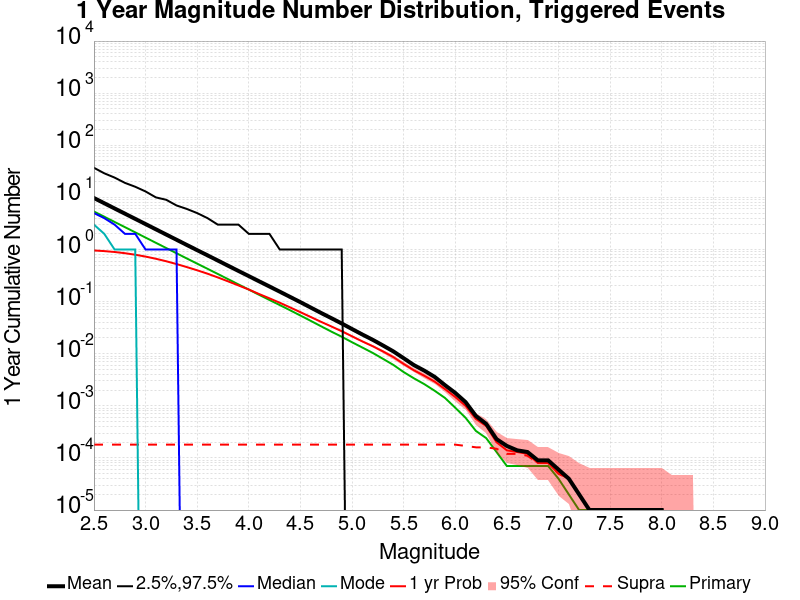
| Mag | Mean | 2.5 %ile | 97.5 %ile | Median | Mode | 1 yr Probability | 1 yr Prob 95% Conf | 1 yr Supra-Seis Prob | Primary Aftershocks Mean |
|---|---|---|---|---|---|---|---|---|---|
| M≥2.5 | 8.920 | 0.000 | 37.000 | 5.000 | 3.000 | 0.959 (95.87%) | [95.64% 96.08%] | 1.56E-4 (0.02%) | 5.347 |
| M≥2.6 | 7.079 | 0.000 | 29.000 | 4.000 | 2.000 | 0.932 (93.16%) | [92.87% 93.43%] | 1.56E-4 (0.02%) | 4.245 |
| M≥2.7 | 5.623 | 0.000 | 24.000 | 3.000 | 1.000 | 0.894 (89.39%) | [89.04% 89.72%] | 1.56E-4 (0.02%) | 3.370 |
| M≥2.8 | 4.476 | 0.000 | 19.000 | 2.000 | 1.000 | 0.848 (84.83%) | [84.43% 85.22%] | 1.56E-4 (0.02%) | 2.684 |
| M≥2.9 | 3.551 | 0.000 | 16.000 | 2.000 | 1.000 | 0.792 (79.16%) | [78.71% 79.60%] | 1.56E-4 (0.02%) | 2.126 |
| M≥3 | 2.813 | 0.000 | 13.000 | 1.000 | 0.000 | 0.729 (72.93%) | [72.44% 73.41%] | 1.56E-4 (0.02%) | 1.685 |
| M≥3.1 | 2.234 | 0.000 | 10.000 | 1.000 | 0.000 | 0.662 (66.16%) | [65.64% 66.68%] | 1.56E-4 (0.02%) | 1.338 |
| M≥3.2 | 1.772 | 0.000 | 9.000 | 1.000 | 0.000 | 0.592 (59.20%) | [58.66% 59.74%] | 1.56E-4 (0.02%) | 1.060 |
| M≥3.3 | 1.411 | 0.000 | 7.000 | 1.000 | 0.000 | 0.525 (52.52%) | [51.97% 53.06%] | 1.56E-4 (0.02%) | 0.844 |
| M≥3.4 | 1.119 | 0.000 | 6.000 | 0.000 | 0.000 | 0.459 (45.88%) | [45.34% 46.43%] | 1.56E-4 (0.02%) | 0.669 |
| M≥3.5 | 0.890 | 0.000 | 5.000 | 0.000 | 0.000 | 0.397 (39.68%) | [39.14% 40.22%] | 1.56E-4 (0.02%) | 0.532 |
| M≥3.6 | 0.709 | 0.000 | 4.000 | 0.000 | 0.000 | 0.341 (34.14%) | [33.62% 34.66%] | 1.56E-4 (0.02%) | 0.424 |
| M≥3.7 | 0.566 | 0.000 | 3.000 | 0.000 | 0.000 | 0.290 (28.98%) | [28.49% 29.48%] | 1.56E-4 (0.02%) | 0.338 |
| M≥3.8 | 0.447 | 0.000 | 3.000 | 0.000 | 0.000 | 0.243 (24.32%) | [23.85% 24.79%] | 1.56E-4 (0.02%) | 0.268 |
| M≥3.9 | 0.353 | 0.000 | 3.000 | 0.000 | 0.000 | 0.202 (20.23%) | [19.79% 20.68%] | 1.56E-4 (0.02%) | 0.211 |
| M≥4 | 0.280 | 0.000 | 2.000 | 0.000 | 0.000 | 0.168 (16.79%) | [16.38% 17.21%] | 1.56E-4 (0.02%) | 0.167 |
| M≥4.1 | 0.221 | 0.000 | 2.000 | 0.000 | 0.000 | 0.137 (13.74%) | [13.37% 14.13%] | 1.56E-4 (0.02%) | 0.132 |
| M≥4.2 | 0.177 | 0.000 | 2.000 | 0.000 | 0.000 | 0.114 (11.37%) | [11.02% 11.72%] | 1.56E-4 (0.02%) | 0.105 |
| M≥4.3 | 0.141 | 0.000 | 1.000 | 0.000 | 0.000 | 0.094 (9.41%) | [9.09% 9.73%] | 1.56E-4 (0.02%) | 0.085 |
| M≥4.4 | 0.112 | 0.000 | 1.000 | 0.000 | 0.000 | 0.077 (7.67%) | [7.38% 7.96%] | 1.56E-4 (0.02%) | 0.068 |
| M≥4.5 | 0.088 | 0.000 | 1.000 | 0.000 | 0.000 | 0.062 (6.20%) | [5.94% 6.47%] | 1.56E-4 (0.02%) | 0.054 |
| M≥4.6 | 0.068 | 0.000 | 1.000 | 0.000 | 0.000 | 0.049 (4.86%) | [4.63% 5.10%] | 1.56E-4 (0.02%) | 0.041 |
| M≥4.7 | 0.053 | 0.000 | 1.000 | 0.000 | 0.000 | 0.039 (3.91%) | [3.70% 4.13%] | 1.56E-4 (0.02%) | 0.032 |
| M≥4.8 | 0.043 | 0.000 | 1.000 | 0.000 | 0.000 | 0.032 (3.23%) | [3.04% 3.43%] | 1.56E-4 (0.02%) | 0.026 |
| M≥4.9 | 0.034 | 0.000 | 1.000 | 0.000 | 0.000 | 0.026 (2.61%) | [2.44% 2.79%] | 1.56E-4 (0.02%) | 0.021 |
| M≥5 | 0.027 | 0.000 | 0.000 | 0.000 | 0.000 | 0.021 (2.11%) | [1.96% 2.27%] | 1.56E-4 (0.02%) | 0.017 |
| M≥5.1 | 0.021 | 0.000 | 0.000 | 0.000 | 0.000 | 0.017 (1.70%) | [1.56% 1.85%] | 1.56E-4 (0.02%) | 0.013 |
| M≥5.2 | 0.017 | 0.000 | 0.000 | 0.000 | 0.000 | 0.013 (1.35%) | [1.23% 1.48%] | 1.56E-4 (0.02%) | 0.010 |
| M≥5.3 | 0.013 | 0.000 | 0.000 | 0.000 | 0.000 | 0.011 (1.08%) | [0.97% 1.20%] | 1.56E-4 (0.02%) | 7.91E-3 |
| M≥5.4 | 0.010 | 0.000 | 0.000 | 0.000 | 0.000 | 8.35E-3 (0.83%) | [0.74% 0.94%] | 1.56E-4 (0.02%) | 6.11E-3 |
| M≥5.5 | 7.23E-3 | 0.000 | 0.000 | 0.000 | 0.000 | 5.98E-3 (0.60%) | [0.52% 0.69%] | 1.56E-4 (0.02%) | 4.39E-3 |
| M≥5.6 | 5.23E-3 | 0.000 | 0.000 | 0.000 | 0.000 | 4.52E-3 (0.45%) | [0.38% 0.53%] | 1.56E-4 (0.02%) | 3.21E-3 |
| M≥5.7 | 4.08E-3 | 0.000 | 0.000 | 0.000 | 0.000 | 3.55E-3 (0.36%) | [0.29% 0.43%] | 1.56E-4 (0.02%) | 2.55E-3 |
| M≥5.8 | 3.27E-3 | 0.000 | 0.000 | 0.000 | 0.000 | 2.90E-3 (0.29%) | [0.24% 0.36%] | 1.56E-4 (0.02%) | 1.96E-3 |
| M≥5.9 | 2.37E-3 | 0.000 | 0.000 | 0.000 | 0.000 | 2.09E-3 (0.21%) | [0.16% 0.27%] | 1.56E-4 (0.02%) | 1.43E-3 |
| M≥6 | 1.81E-3 | 0.000 | 0.000 | 0.000 | 0.000 | 1.56E-3 (0.16%) | [0.12% 0.21%] | 1.56E-4 (0.02%) | 9.35E-4 |
| M≥6.1 | 1.28E-3 | 0.000 | 0.000 | 0.000 | 0.000 | 1.15E-3 (0.12%) | [0.08% 0.16%] | 1.56E-4 (0.02%) | 6.85E-4 |
| M≥6.2 | 6.85E-4 | 0.000 | 0.000 | 0.000 | 0.000 | 6.85E-4 (0.07%) | [0.04% 0.11%] | 1.25E-4 (0.01%) | 3.74E-4 |
| M≥6.3 | 5.61E-4 | 0.000 | 0.000 | 0.000 | 0.000 | 5.61E-4 (0.06%) | [0.03% 0.09%] | 1.25E-4 (0.01%) | 3.43E-4 |
| M≥6.4 | 1.87E-4 | 0.000 | 0.000 | 0.000 | 0.000 | 1.87E-4 (0.02%) | [0.01% 0.04%] | 1.25E-4 (0.01%) | 1.25E-4 |
| M≥6.5 | 1.25E-4 | 0.000 | 0.000 | 0.000 | 0.000 | 1.25E-4 (0.01%) | [0.00% 0.03%] | 9.35E-5 (0.01%) | 6.23E-5 |
| M≥6.6 | 1.25E-4 | 0.000 | 0.000 | 0.000 | 0.000 | 1.25E-4 (0.01%) | [0.00% 0.03%] | 9.35E-5 (0.01%) | 6.23E-5 |
| M≥6.7 | 9.35E-5 | 0.000 | 0.000 | 0.000 | 0.000 | 9.35E-5 (0.01%) | [0.00% 0.03%] | 6.23E-5 (0.01%) | 6.23E-5 |
| M≥6.8 | 6.23E-5 | 0.000 | 0.000 | 0.000 | 0.000 | 6.23E-5 (0.01%) | [0.00% 0.03%] | 6.23E-5 (0.01%) | 6.23E-5 |
| M≥6.9 | 6.23E-5 | 0.000 | 0.000 | 0.000 | 0.000 | 6.23E-5 (0.01%) | [0.00% 0.03%] | 6.23E-5 (0.01%) | 6.23E-5 |
| M≥7 | 3.12E-5 | 0.000 | 0.000 | 0.000 | 0.000 | 3.12E-5 (0.00%) | [0.00% 0.02%] | 3.12E-5 (0.00%) | 3.12E-5 |
| M≥7.1 | 0.000 | 0.000 | 0.000 | 0.000 | 0.000 | 0.000 (0.00%) | [0.00% 0.01%] | 0.000 (0.00%) | 0.000 |
| M≥7.2 | 0.000 | 0.000 | 0.000 | 0.000 | 0.000 | 0.000 (0.00%) | [0.00% 0.01%] | 0.000 (0.00%) | 0.000 |
| M≥7.3 | 0.000 | 0.000 | 0.000 | 0.000 | 0.000 | 0.000 (0.00%) | [0.00% 0.01%] | 0.000 (0.00%) | 0.000 |
| M≥7.4 | 0.000 | 0.000 | 0.000 | 0.000 | 0.000 | 0.000 (0.00%) | [0.00% 0.01%] | 0.000 (0.00%) | 0.000 |
| M≥7.5 | 0.000 | 0.000 | 0.000 | 0.000 | 0.000 | 0.000 (0.00%) | [0.00% 0.01%] | 0.000 (0.00%) | 0.000 |
| M≥7.6 | 0.000 | 0.000 | 0.000 | 0.000 | 0.000 | 0.000 (0.00%) | [0.00% 0.01%] | 0.000 (0.00%) | 0.000 |
| M≥7.7 | 0.000 | 0.000 | 0.000 | 0.000 | 0.000 | 0.000 (0.00%) | [0.00% 0.01%] | 0.000 (0.00%) | 0.000 |
| M≥7.8 | 0.000 | 0.000 | 0.000 | 0.000 | 0.000 | 0.000 (0.00%) | [0.00% 0.01%] | 0.000 (0.00%) | 0.000 |
| M≥7.9 | 0.000 | 0.000 | 0.000 | 0.000 | 0.000 | 0.000 (0.00%) | [0.00% 0.01%] | 0.000 (0.00%) | 0.000 |
| M≥8 | 0.000 | 0.000 | 0.000 | 0.000 | 0.000 | 0.000 (0.00%) | [0.00% 0.01%] | 0.000 (0.00%) | 0.000 |
| M≥8.1 | 0.000 | 0.000 | 0.000 | 0.000 | 0.000 | 0.000 (0.00%) | [0.00% 0.01%] | 0.000 (0.00%) | 0.000 |
| M≥8.2 | 0.000 | 0.000 | 0.000 | 0.000 | 0.000 | 0.000 (0.00%) | [0.00% 0.01%] | 0.000 (0.00%) | 0.000 |
| M≥8.3 | 0.000 | 0.000 | 0.000 | 0.000 | 0.000 | 0.000 (0.00%) | [0.00% 0.01%] | 0.000 (0.00%) | 0.000 |
| M≥8.4 | 0.000 | 0.000 | 0.000 | 0.000 | 0.000 | 0.000 (0.00%) | [0.00% 0.01%] | 0.000 (0.00%) | 0.000 |
| M≥8.5 | 0.000 | 0.000 | 0.000 | 0.000 | 0.000 | 0.000 (0.00%) | [0.00% 0.01%] | 0.000 (0.00%) | 0.000 |
| M≥8.6 | 0.000 | 0.000 | 0.000 | 0.000 | 0.000 | 0.000 (0.00%) | [0.00% 0.01%] | 0.000 (0.00%) | 0.000 |
| M≥8.7 | 0.000 | 0.000 | 0.000 | 0.000 | 0.000 | 0.000 (0.00%) | [0.00% 0.01%] | 0.000 (0.00%) | 0.000 |
| M≥8.8 | 0.000 | 0.000 | 0.000 | 0.000 | 0.000 | 0.000 (0.00%) | [0.00% 0.01%] | 0.000 (0.00%) | 0.000 |
| M≥8.9 | 0.000 | 0.000 | 0.000 | 0.000 | 0.000 | 0.000 (0.00%) | [0.00% 0.01%] | 0.000 (0.00%) | 0.000 |
| M≥9 | 0.000 | 0.000 | 0.000 | 0.000 | 0.000 | 0.000 (0.00%) | [0.00% 0.01%] | 0.000 (0.00%) | 0.000 |
Legend

| Mag | Mean | 2.5 %ile | 97.5 %ile | Median | Mode | 1 mo Probability | 1 mo Prob 95% Conf | 1 mo Supra-Seis Prob | Primary Aftershocks Mean |
|---|---|---|---|---|---|---|---|---|---|
| M≥2.5 | 4.031 | 0.000 | 16.000 | 2.000 | 1.000 | 0.855 (85.48%) | [85.09% 85.87%] | 3.12E-5 (0.00%) | 2.775 |
| M≥2.6 | 3.199 | 0.000 | 13.000 | 2.000 | 1.000 | 0.800 (79.98%) | [79.53% 80.41%] | 3.12E-5 (0.00%) | 2.203 |
| M≥2.7 | 2.540 | 0.000 | 11.000 | 1.000 | 0.000 | 0.737 (73.69%) | [73.21% 74.17%] | 3.12E-5 (0.00%) | 1.750 |
| M≥2.8 | 2.020 | 0.000 | 9.000 | 1.000 | 0.000 | 0.669 (66.87%) | [66.35% 67.38%] | 3.12E-5 (0.00%) | 1.392 |
| M≥2.9 | 1.601 | 0.000 | 7.000 | 1.000 | 0.000 | 0.598 (59.79%) | [59.25% 60.33%] | 3.12E-5 (0.00%) | 1.103 |
| M≥3 | 1.267 | 0.000 | 6.000 | 1.000 | 0.000 | 0.528 (52.78%) | [52.23% 53.33%] | 3.12E-5 (0.00%) | 0.873 |
| M≥3.1 | 1.008 | 0.000 | 5.000 | 0.000 | 0.000 | 0.460 (45.98%) | [45.43% 46.52%] | 3.12E-5 (0.00%) | 0.693 |
| M≥3.2 | 0.801 | 0.000 | 4.000 | 0.000 | 0.000 | 0.396 (39.62%) | [39.08% 40.16%] | 3.12E-5 (0.00%) | 0.551 |
| M≥3.3 | 0.639 | 0.000 | 4.000 | 0.000 | 0.000 | 0.340 (33.99%) | [33.48% 34.52%] | 3.12E-5 (0.00%) | 0.439 |
| M≥3.4 | 0.505 | 0.000 | 3.000 | 0.000 | 0.000 | 0.287 (28.67%) | [28.18% 29.17%] | 3.12E-5 (0.00%) | 0.346 |
| M≥3.5 | 0.403 | 0.000 | 3.000 | 0.000 | 0.000 | 0.241 (24.09%) | [23.62% 24.56%] | 3.12E-5 (0.00%) | 0.275 |
| M≥3.6 | 0.321 | 0.000 | 2.000 | 0.000 | 0.000 | 0.202 (20.21%) | [19.77% 20.66%] | 3.12E-5 (0.00%) | 0.220 |
| M≥3.7 | 0.255 | 0.000 | 2.000 | 0.000 | 0.000 | 0.167 (16.72%) | [16.32% 17.14%] | 3.12E-5 (0.00%) | 0.175 |
| M≥3.8 | 0.202 | 0.000 | 2.000 | 0.000 | 0.000 | 0.138 (13.76%) | [13.39% 14.15%] | 3.12E-5 (0.00%) | 0.139 |
| M≥3.9 | 0.159 | 0.000 | 1.000 | 0.000 | 0.000 | 0.112 (11.18%) | [10.84% 11.53%] | 3.12E-5 (0.00%) | 0.110 |
| M≥4 | 0.125 | 0.000 | 1.000 | 0.000 | 0.000 | 0.091 (9.08%) | [8.77% 9.40%] | 3.12E-5 (0.00%) | 0.086 |
| M≥4.1 | 0.098 | 0.000 | 1.000 | 0.000 | 0.000 | 0.073 (7.28%) | [7.00% 7.57%] | 3.12E-5 (0.00%) | 0.068 |
| M≥4.2 | 0.078 | 0.000 | 1.000 | 0.000 | 0.000 | 0.059 (5.90%) | [5.64% 6.16%] | 3.12E-5 (0.00%) | 0.054 |
| M≥4.3 | 0.063 | 0.000 | 1.000 | 0.000 | 0.000 | 0.048 (4.77%) | [4.54% 5.01%] | 3.12E-5 (0.00%) | 0.043 |
| M≥4.4 | 0.049 | 0.000 | 1.000 | 0.000 | 0.000 | 0.039 (3.87%) | [3.66% 4.09%] | 3.12E-5 (0.00%) | 0.035 |
| M≥4.5 | 0.039 | 0.000 | 1.000 | 0.000 | 0.000 | 0.031 (3.10%) | [2.91% 3.30%] | 3.12E-5 (0.00%) | 0.027 |
| M≥4.6 | 0.030 | 0.000 | 0.000 | 0.000 | 0.000 | 0.024 (2.42%) | [2.25% 2.59%] | 3.12E-5 (0.00%) | 0.021 |
| M≥4.7 | 0.023 | 0.000 | 0.000 | 0.000 | 0.000 | 0.019 (1.94%) | [1.79% 2.10%] | 3.12E-5 (0.00%) | 0.017 |
| M≥4.8 | 0.019 | 0.000 | 0.000 | 0.000 | 0.000 | 0.016 (1.63%) | [1.49% 1.77%] | 3.12E-5 (0.00%) | 0.014 |
| M≥4.9 | 0.015 | 0.000 | 0.000 | 0.000 | 0.000 | 0.013 (1.30%) | [1.18% 1.43%] | 3.12E-5 (0.00%) | 0.011 |
| M≥5 | 0.012 | 0.000 | 0.000 | 0.000 | 0.000 | 0.010 (1.05%) | [0.94% 1.17%] | 3.12E-5 (0.00%) | 8.57E-3 |
| M≥5.1 | 9.60E-3 | 0.000 | 0.000 | 0.000 | 0.000 | 8.47E-3 (0.85%) | [0.75% 0.96%] | 3.12E-5 (0.00%) | 7.04E-3 |
| M≥5.2 | 7.45E-3 | 0.000 | 0.000 | 0.000 | 0.000 | 6.60E-3 (0.66%) | [0.58% 0.76%] | 3.12E-5 (0.00%) | 5.26E-3 |
| M≥5.3 | 5.61E-3 | 0.000 | 0.000 | 0.000 | 0.000 | 5.05E-3 (0.50%) | [0.43% 0.59%] | 3.12E-5 (0.00%) | 3.99E-3 |
| M≥5.4 | 3.99E-3 | 0.000 | 0.000 | 0.000 | 0.000 | 3.61E-3 (0.36%) | [0.30% 0.43%] | 3.12E-5 (0.00%) | 2.74E-3 |
| M≥5.5 | 2.93E-3 | 0.000 | 0.000 | 0.000 | 0.000 | 2.65E-3 (0.26%) | [0.21% 0.33%] | 3.12E-5 (0.00%) | 2.02E-3 |
| M≥5.6 | 2.06E-3 | 0.000 | 0.000 | 0.000 | 0.000 | 1.90E-3 (0.19%) | [0.15% 0.25%] | 3.12E-5 (0.00%) | 1.37E-3 |
| M≥5.7 | 1.56E-3 | 0.000 | 0.000 | 0.000 | 0.000 | 1.43E-3 (0.14%) | [0.11% 0.19%] | 3.12E-5 (0.00%) | 1.03E-3 |
| M≥5.8 | 1.12E-3 | 0.000 | 0.000 | 0.000 | 0.000 | 1.03E-3 (0.10%) | [0.07% 0.15%] | 3.12E-5 (0.00%) | 6.54E-4 |
| M≥5.9 | 8.10E-4 | 0.000 | 0.000 | 0.000 | 0.000 | 7.48E-4 (0.07%) | [0.05% 0.11%] | 3.12E-5 (0.00%) | 4.98E-4 |
| M≥6 | 6.23E-4 | 0.000 | 0.000 | 0.000 | 0.000 | 5.61E-4 (0.06%) | [0.03% 0.09%] | 3.12E-5 (0.00%) | 3.74E-4 |
| M≥6.1 | 4.05E-4 | 0.000 | 0.000 | 0.000 | 0.000 | 3.74E-4 (0.04%) | [0.02% 0.07%] | 3.12E-5 (0.00%) | 2.80E-4 |
| M≥6.2 | 1.25E-4 | 0.000 | 0.000 | 0.000 | 0.000 | 1.25E-4 (0.01%) | [0.00% 0.03%] | 0.000 (0.00%) | 6.23E-5 |
| M≥6.3 | 1.25E-4 | 0.000 | 0.000 | 0.000 | 0.000 | 1.25E-4 (0.01%) | [0.00% 0.03%] | 0.000 (0.00%) | 6.23E-5 |
| M≥6.4 | 0.000 | 0.000 | 0.000 | 0.000 | 0.000 | 0.000 (0.00%) | [0.00% 0.01%] | 0.000 (0.00%) | 0.000 |
| M≥6.5 | 0.000 | 0.000 | 0.000 | 0.000 | 0.000 | 0.000 (0.00%) | [0.00% 0.01%] | 0.000 (0.00%) | 0.000 |
| M≥6.6 | 0.000 | 0.000 | 0.000 | 0.000 | 0.000 | 0.000 (0.00%) | [0.00% 0.01%] | 0.000 (0.00%) | 0.000 |
| M≥6.7 | 0.000 | 0.000 | 0.000 | 0.000 | 0.000 | 0.000 (0.00%) | [0.00% 0.01%] | 0.000 (0.00%) | 0.000 |
| M≥6.8 | 0.000 | 0.000 | 0.000 | 0.000 | 0.000 | 0.000 (0.00%) | [0.00% 0.01%] | 0.000 (0.00%) | 0.000 |
| M≥6.9 | 0.000 | 0.000 | 0.000 | 0.000 | 0.000 | 0.000 (0.00%) | [0.00% 0.01%] | 0.000 (0.00%) | 0.000 |
| M≥7 | 0.000 | 0.000 | 0.000 | 0.000 | 0.000 | 0.000 (0.00%) | [0.00% 0.01%] | 0.000 (0.00%) | 0.000 |
| M≥7.1 | 0.000 | 0.000 | 0.000 | 0.000 | 0.000 | 0.000 (0.00%) | [0.00% 0.01%] | 0.000 (0.00%) | 0.000 |
| M≥7.2 | 0.000 | 0.000 | 0.000 | 0.000 | 0.000 | 0.000 (0.00%) | [0.00% 0.01%] | 0.000 (0.00%) | 0.000 |
| M≥7.3 | 0.000 | 0.000 | 0.000 | 0.000 | 0.000 | 0.000 (0.00%) | [0.00% 0.01%] | 0.000 (0.00%) | 0.000 |
| M≥7.4 | 0.000 | 0.000 | 0.000 | 0.000 | 0.000 | 0.000 (0.00%) | [0.00% 0.01%] | 0.000 (0.00%) | 0.000 |
| M≥7.5 | 0.000 | 0.000 | 0.000 | 0.000 | 0.000 | 0.000 (0.00%) | [0.00% 0.01%] | 0.000 (0.00%) | 0.000 |
| M≥7.6 | 0.000 | 0.000 | 0.000 | 0.000 | 0.000 | 0.000 (0.00%) | [0.00% 0.01%] | 0.000 (0.00%) | 0.000 |
| M≥7.7 | 0.000 | 0.000 | 0.000 | 0.000 | 0.000 | 0.000 (0.00%) | [0.00% 0.01%] | 0.000 (0.00%) | 0.000 |
| M≥7.8 | 0.000 | 0.000 | 0.000 | 0.000 | 0.000 | 0.000 (0.00%) | [0.00% 0.01%] | 0.000 (0.00%) | 0.000 |
| M≥7.9 | 0.000 | 0.000 | 0.000 | 0.000 | 0.000 | 0.000 (0.00%) | [0.00% 0.01%] | 0.000 (0.00%) | 0.000 |
| M≥8 | 0.000 | 0.000 | 0.000 | 0.000 | 0.000 | 0.000 (0.00%) | [0.00% 0.01%] | 0.000 (0.00%) | 0.000 |
| M≥8.1 | 0.000 | 0.000 | 0.000 | 0.000 | 0.000 | 0.000 (0.00%) | [0.00% 0.01%] | 0.000 (0.00%) | 0.000 |
| M≥8.2 | 0.000 | 0.000 | 0.000 | 0.000 | 0.000 | 0.000 (0.00%) | [0.00% 0.01%] | 0.000 (0.00%) | 0.000 |
| M≥8.3 | 0.000 | 0.000 | 0.000 | 0.000 | 0.000 | 0.000 (0.00%) | [0.00% 0.01%] | 0.000 (0.00%) | 0.000 |
| M≥8.4 | 0.000 | 0.000 | 0.000 | 0.000 | 0.000 | 0.000 (0.00%) | [0.00% 0.01%] | 0.000 (0.00%) | 0.000 |
| M≥8.5 | 0.000 | 0.000 | 0.000 | 0.000 | 0.000 | 0.000 (0.00%) | [0.00% 0.01%] | 0.000 (0.00%) | 0.000 |
| M≥8.6 | 0.000 | 0.000 | 0.000 | 0.000 | 0.000 | 0.000 (0.00%) | [0.00% 0.01%] | 0.000 (0.00%) | 0.000 |
| M≥8.7 | 0.000 | 0.000 | 0.000 | 0.000 | 0.000 | 0.000 (0.00%) | [0.00% 0.01%] | 0.000 (0.00%) | 0.000 |
| M≥8.8 | 0.000 | 0.000 | 0.000 | 0.000 | 0.000 | 0.000 (0.00%) | [0.00% 0.01%] | 0.000 (0.00%) | 0.000 |
| M≥8.9 | 0.000 | 0.000 | 0.000 | 0.000 | 0.000 | 0.000 (0.00%) | [0.00% 0.01%] | 0.000 (0.00%) | 0.000 |
| M≥9 | 0.000 | 0.000 | 0.000 | 0.000 | 0.000 | 0.000 (0.00%) | [0.00% 0.01%] | 0.000 (0.00%) | 0.000 |
Legend

| Mag | Mean | 2.5 %ile | 97.5 %ile | Median | Mode | 1 wk Probability | 1 wk Prob 95% Conf | 1 wk Supra-Seis Prob | Primary Aftershocks Mean |
|---|---|---|---|---|---|---|---|---|---|
| M≥2.5 | 1.888 | 0.000 | 8.000 | 1.000 | 0.000 | 0.674 (67.36%) | [66.84% 67.87%] | 0.000 (0.00%) | 1.404 |
| M≥2.6 | 1.497 | 0.000 | 6.000 | 1.000 | 0.000 | 0.601 (60.07%) | [59.53% 60.60%] | 0.000 (0.00%) | 1.113 |
| M≥2.7 | 1.186 | 0.000 | 5.000 | 1.000 | 0.000 | 0.530 (53.02%) | [52.48% 53.57%] | 0.000 (0.00%) | 0.883 |
| M≥2.8 | 0.942 | 0.000 | 4.000 | 0.000 | 0.000 | 0.460 (45.96%) | [45.42% 46.51%] | 0.000 (0.00%) | 0.702 |
| M≥2.9 | 0.746 | 0.000 | 4.000 | 0.000 | 0.000 | 0.393 (39.33%) | [38.79% 39.86%] | 0.000 (0.00%) | 0.555 |
| M≥3 | 0.591 | 0.000 | 3.000 | 0.000 | 0.000 | 0.335 (33.46%) | [32.95% 33.98%] | 0.000 (0.00%) | 0.440 |
| M≥3.1 | 0.471 | 0.000 | 3.000 | 0.000 | 0.000 | 0.283 (28.25%) | [27.76% 28.75%] | 0.000 (0.00%) | 0.350 |
| M≥3.2 | 0.374 | 0.000 | 2.000 | 0.000 | 0.000 | 0.236 (23.58%) | [23.12% 24.05%] | 0.000 (0.00%) | 0.278 |
| M≥3.3 | 0.297 | 0.000 | 2.000 | 0.000 | 0.000 | 0.196 (19.61%) | [19.18% 20.05%] | 0.000 (0.00%) | 0.220 |
| M≥3.4 | 0.235 | 0.000 | 2.000 | 0.000 | 0.000 | 0.161 (16.15%) | [15.75% 16.56%] | 0.000 (0.00%) | 0.173 |
| M≥3.5 | 0.188 | 0.000 | 2.000 | 0.000 | 0.000 | 0.134 (13.37%) | [13.00% 13.75%] | 0.000 (0.00%) | 0.139 |
| M≥3.6 | 0.149 | 0.000 | 1.000 | 0.000 | 0.000 | 0.109 (10.90%) | [10.56% 11.25%] | 0.000 (0.00%) | 0.110 |
| M≥3.7 | 0.119 | 0.000 | 1.000 | 0.000 | 0.000 | 0.089 (8.88%) | [8.58% 9.20%] | 0.000 (0.00%) | 0.087 |
| M≥3.8 | 0.093 | 0.000 | 1.000 | 0.000 | 0.000 | 0.071 (7.14%) | [6.86% 7.43%] | 0.000 (0.00%) | 0.069 |
| M≥3.9 | 0.073 | 0.000 | 1.000 | 0.000 | 0.000 | 0.057 (5.71%) | [5.46% 5.97%] | 0.000 (0.00%) | 0.054 |
| M≥4 | 0.057 | 0.000 | 1.000 | 0.000 | 0.000 | 0.046 (4.57%) | [4.35% 4.81%] | 0.000 (0.00%) | 0.042 |
| M≥4.1 | 0.045 | 0.000 | 1.000 | 0.000 | 0.000 | 0.037 (3.68%) | [3.48% 3.90%] | 0.000 (0.00%) | 0.034 |
| M≥4.2 | 0.036 | 0.000 | 1.000 | 0.000 | 0.000 | 0.029 (2.90%) | [2.72% 3.09%] | 0.000 (0.00%) | 0.026 |
| M≥4.3 | 0.028 | 0.000 | 0.000 | 0.000 | 0.000 | 0.023 (2.33%) | [2.17% 2.51%] | 0.000 (0.00%) | 0.021 |
| M≥4.4 | 0.023 | 0.000 | 0.000 | 0.000 | 0.000 | 0.019 (1.91%) | [1.76% 2.06%] | 0.000 (0.00%) | 0.017 |
| M≥4.5 | 0.018 | 0.000 | 0.000 | 0.000 | 0.000 | 0.015 (1.52%) | [1.39% 1.66%] | 0.000 (0.00%) | 0.013 |
| M≥4.6 | 0.014 | 0.000 | 0.000 | 0.000 | 0.000 | 0.012 (1.23%) | [1.11% 1.36%] | 0.000 (0.00%) | 0.011 |
| M≥4.7 | 0.011 | 0.000 | 0.000 | 0.000 | 0.000 | 9.63E-3 (0.96%) | [0.86% 1.08%] | 0.000 (0.00%) | 8.32E-3 |
| M≥4.8 | 8.94E-3 | 0.000 | 0.000 | 0.000 | 0.000 | 7.98E-3 (0.80%) | [0.70% 0.90%] | 0.000 (0.00%) | 6.82E-3 |
| M≥4.9 | 7.04E-3 | 0.000 | 0.000 | 0.000 | 0.000 | 6.20E-3 (0.62%) | [0.54% 0.71%] | 0.000 (0.00%) | 5.30E-3 |
| M≥5 | 5.42E-3 | 0.000 | 0.000 | 0.000 | 0.000 | 4.77E-3 (0.48%) | [0.41% 0.56%] | 0.000 (0.00%) | 4.08E-3 |
| M≥5.1 | 4.42E-3 | 0.000 | 0.000 | 0.000 | 0.000 | 3.93E-3 (0.39%) | [0.33% 0.47%] | 0.000 (0.00%) | 3.40E-3 |
| M≥5.2 | 3.21E-3 | 0.000 | 0.000 | 0.000 | 0.000 | 2.90E-3 (0.29%) | [0.24% 0.36%] | 0.000 (0.00%) | 2.40E-3 |
| M≥5.3 | 2.34E-3 | 0.000 | 0.000 | 0.000 | 0.000 | 2.15E-3 (0.21%) | [0.17% 0.27%] | 0.000 (0.00%) | 1.81E-3 |
| M≥5.4 | 1.59E-3 | 0.000 | 0.000 | 0.000 | 0.000 | 1.46E-3 (0.15%) | [0.11% 0.20%] | 0.000 (0.00%) | 1.15E-3 |
| M≥5.5 | 1.21E-3 | 0.000 | 0.000 | 0.000 | 0.000 | 1.12E-3 (0.11%) | [0.08% 0.16%] | 0.000 (0.00%) | 9.03E-4 |
| M≥5.6 | 8.10E-4 | 0.000 | 0.000 | 0.000 | 0.000 | 7.17E-4 (0.07%) | [0.05% 0.11%] | 0.000 (0.00%) | 5.30E-4 |
| M≥5.7 | 5.61E-4 | 0.000 | 0.000 | 0.000 | 0.000 | 4.98E-4 (0.05%) | [0.03% 0.08%] | 0.000 (0.00%) | 3.74E-4 |
| M≥5.8 | 3.74E-4 | 0.000 | 0.000 | 0.000 | 0.000 | 3.12E-4 (0.03%) | [0.02% 0.06%] | 0.000 (0.00%) | 2.18E-4 |
| M≥5.9 | 2.18E-4 | 0.000 | 0.000 | 0.000 | 0.000 | 1.87E-4 (0.02%) | [0.01% 0.04%] | 0.000 (0.00%) | 1.56E-4 |
| M≥6 | 1.56E-4 | 0.000 | 0.000 | 0.000 | 0.000 | 1.25E-4 (0.01%) | [0.00% 0.03%] | 0.000 (0.00%) | 1.25E-4 |
| M≥6.1 | 3.12E-5 | 0.000 | 0.000 | 0.000 | 0.000 | 3.12E-5 (0.00%) | [0.00% 0.02%] | 0.000 (0.00%) | 3.12E-5 |
| M≥6.2 | 0.000 | 0.000 | 0.000 | 0.000 | 0.000 | 0.000 (0.00%) | [0.00% 0.01%] | 0.000 (0.00%) | 0.000 |
| M≥6.3 | 0.000 | 0.000 | 0.000 | 0.000 | 0.000 | 0.000 (0.00%) | [0.00% 0.01%] | 0.000 (0.00%) | 0.000 |
| M≥6.4 | 0.000 | 0.000 | 0.000 | 0.000 | 0.000 | 0.000 (0.00%) | [0.00% 0.01%] | 0.000 (0.00%) | 0.000 |
| M≥6.5 | 0.000 | 0.000 | 0.000 | 0.000 | 0.000 | 0.000 (0.00%) | [0.00% 0.01%] | 0.000 (0.00%) | 0.000 |
| M≥6.6 | 0.000 | 0.000 | 0.000 | 0.000 | 0.000 | 0.000 (0.00%) | [0.00% 0.01%] | 0.000 (0.00%) | 0.000 |
| M≥6.7 | 0.000 | 0.000 | 0.000 | 0.000 | 0.000 | 0.000 (0.00%) | [0.00% 0.01%] | 0.000 (0.00%) | 0.000 |
| M≥6.8 | 0.000 | 0.000 | 0.000 | 0.000 | 0.000 | 0.000 (0.00%) | [0.00% 0.01%] | 0.000 (0.00%) | 0.000 |
| M≥6.9 | 0.000 | 0.000 | 0.000 | 0.000 | 0.000 | 0.000 (0.00%) | [0.00% 0.01%] | 0.000 (0.00%) | 0.000 |
| M≥7 | 0.000 | 0.000 | 0.000 | 0.000 | 0.000 | 0.000 (0.00%) | [0.00% 0.01%] | 0.000 (0.00%) | 0.000 |
| M≥7.1 | 0.000 | 0.000 | 0.000 | 0.000 | 0.000 | 0.000 (0.00%) | [0.00% 0.01%] | 0.000 (0.00%) | 0.000 |
| M≥7.2 | 0.000 | 0.000 | 0.000 | 0.000 | 0.000 | 0.000 (0.00%) | [0.00% 0.01%] | 0.000 (0.00%) | 0.000 |
| M≥7.3 | 0.000 | 0.000 | 0.000 | 0.000 | 0.000 | 0.000 (0.00%) | [0.00% 0.01%] | 0.000 (0.00%) | 0.000 |
| M≥7.4 | 0.000 | 0.000 | 0.000 | 0.000 | 0.000 | 0.000 (0.00%) | [0.00% 0.01%] | 0.000 (0.00%) | 0.000 |
| M≥7.5 | 0.000 | 0.000 | 0.000 | 0.000 | 0.000 | 0.000 (0.00%) | [0.00% 0.01%] | 0.000 (0.00%) | 0.000 |
| M≥7.6 | 0.000 | 0.000 | 0.000 | 0.000 | 0.000 | 0.000 (0.00%) | [0.00% 0.01%] | 0.000 (0.00%) | 0.000 |
| M≥7.7 | 0.000 | 0.000 | 0.000 | 0.000 | 0.000 | 0.000 (0.00%) | [0.00% 0.01%] | 0.000 (0.00%) | 0.000 |
| M≥7.8 | 0.000 | 0.000 | 0.000 | 0.000 | 0.000 | 0.000 (0.00%) | [0.00% 0.01%] | 0.000 (0.00%) | 0.000 |
| M≥7.9 | 0.000 | 0.000 | 0.000 | 0.000 | 0.000 | 0.000 (0.00%) | [0.00% 0.01%] | 0.000 (0.00%) | 0.000 |
| M≥8 | 0.000 | 0.000 | 0.000 | 0.000 | 0.000 | 0.000 (0.00%) | [0.00% 0.01%] | 0.000 (0.00%) | 0.000 |
| M≥8.1 | 0.000 | 0.000 | 0.000 | 0.000 | 0.000 | 0.000 (0.00%) | [0.00% 0.01%] | 0.000 (0.00%) | 0.000 |
| M≥8.2 | 0.000 | 0.000 | 0.000 | 0.000 | 0.000 | 0.000 (0.00%) | [0.00% 0.01%] | 0.000 (0.00%) | 0.000 |
| M≥8.3 | 0.000 | 0.000 | 0.000 | 0.000 | 0.000 | 0.000 (0.00%) | [0.00% 0.01%] | 0.000 (0.00%) | 0.000 |
| M≥8.4 | 0.000 | 0.000 | 0.000 | 0.000 | 0.000 | 0.000 (0.00%) | [0.00% 0.01%] | 0.000 (0.00%) | 0.000 |
| M≥8.5 | 0.000 | 0.000 | 0.000 | 0.000 | 0.000 | 0.000 (0.00%) | [0.00% 0.01%] | 0.000 (0.00%) | 0.000 |
| M≥8.6 | 0.000 | 0.000 | 0.000 | 0.000 | 0.000 | 0.000 (0.00%) | [0.00% 0.01%] | 0.000 (0.00%) | 0.000 |
| M≥8.7 | 0.000 | 0.000 | 0.000 | 0.000 | 0.000 | 0.000 (0.00%) | [0.00% 0.01%] | 0.000 (0.00%) | 0.000 |
| M≥8.8 | 0.000 | 0.000 | 0.000 | 0.000 | 0.000 | 0.000 (0.00%) | [0.00% 0.01%] | 0.000 (0.00%) | 0.000 |
| M≥8.9 | 0.000 | 0.000 | 0.000 | 0.000 | 0.000 | 0.000 (0.00%) | [0.00% 0.01%] | 0.000 (0.00%) | 0.000 |
| M≥9 | 0.000 | 0.000 | 0.000 | 0.000 | 0.000 | 0.000 (0.00%) | [0.00% 0.01%] | 0.000 (0.00%) | 0.000 |
Legend

| Mag | Mean | 2.5 %ile | 97.5 %ile | Median | Mode | 1 d Probability | 1 d Prob 95% Conf | 1 d Supra-Seis Prob | Primary Aftershocks Mean |
|---|---|---|---|---|---|---|---|---|---|
| M≥2.5 | 0.431 | 0.000 | 2.000 | 0.000 | 0.000 | 0.281 (28.10%) | [27.61% 28.60%] | 0.000 (0.00%) | 0.356 |
| M≥2.6 | 0.344 | 0.000 | 2.000 | 0.000 | 0.000 | 0.234 (23.36%) | [22.90% 23.83%] | 0.000 (0.00%) | 0.284 |
| M≥2.7 | 0.273 | 0.000 | 2.000 | 0.000 | 0.000 | 0.194 (19.42%) | [18.99% 19.86%] | 0.000 (0.00%) | 0.226 |
| M≥2.8 | 0.217 | 0.000 | 2.000 | 0.000 | 0.000 | 0.160 (16.00%) | [15.60% 16.41%] | 0.000 (0.00%) | 0.180 |
| M≥2.9 | 0.173 | 0.000 | 1.000 | 0.000 | 0.000 | 0.131 (13.12%) | [12.75% 13.49%] | 0.000 (0.00%) | 0.143 |
| M≥3 | 0.138 | 0.000 | 1.000 | 0.000 | 0.000 | 0.107 (10.71%) | [10.38% 11.06%] | 0.000 (0.00%) | 0.114 |
| M≥3.1 | 0.110 | 0.000 | 1.000 | 0.000 | 0.000 | 0.087 (8.71%) | [8.41% 9.03%] | 0.000 (0.00%) | 0.091 |
| M≥3.2 | 0.087 | 0.000 | 1.000 | 0.000 | 0.000 | 0.070 (7.00%) | [6.73% 7.29%] | 0.000 (0.00%) | 0.072 |
| M≥3.3 | 0.069 | 0.000 | 1.000 | 0.000 | 0.000 | 0.057 (5.69%) | [5.44% 5.95%] | 0.000 (0.00%) | 0.057 |
| M≥3.4 | 0.055 | 0.000 | 1.000 | 0.000 | 0.000 | 0.046 (4.58%) | [4.35% 4.81%] | 0.000 (0.00%) | 0.045 |
| M≥3.5 | 0.044 | 0.000 | 1.000 | 0.000 | 0.000 | 0.037 (3.70%) | [3.50% 3.92%] | 0.000 (0.00%) | 0.036 |
| M≥3.6 | 0.035 | 0.000 | 1.000 | 0.000 | 0.000 | 0.030 (3.02%) | [2.83% 3.21%] | 0.000 (0.00%) | 0.029 |
| M≥3.7 | 0.029 | 0.000 | 0.000 | 0.000 | 0.000 | 0.025 (2.46%) | [2.29% 2.63%] | 0.000 (0.00%) | 0.024 |
| M≥3.8 | 0.022 | 0.000 | 0.000 | 0.000 | 0.000 | 0.019 (1.93%) | [1.78% 2.08%] | 0.000 (0.00%) | 0.018 |
| M≥3.9 | 0.017 | 0.000 | 0.000 | 0.000 | 0.000 | 0.015 (1.47%) | [1.35% 1.61%] | 0.000 (0.00%) | 0.014 |
| M≥4 | 0.013 | 0.000 | 0.000 | 0.000 | 0.000 | 0.011 (1.15%) | [1.03% 1.27%] | 0.000 (0.00%) | 0.011 |
| M≥4.1 | 0.010 | 0.000 | 0.000 | 0.000 | 0.000 | 9.10E-3 (0.91%) | [0.81% 1.02%] | 0.000 (0.00%) | 8.50E-3 |
| M≥4.2 | 7.91E-3 | 0.000 | 0.000 | 0.000 | 0.000 | 6.92E-3 (0.69%) | [0.61% 0.79%] | 0.000 (0.00%) | 6.54E-3 |
| M≥4.3 | 6.26E-3 | 0.000 | 0.000 | 0.000 | 0.000 | 5.42E-3 (0.54%) | [0.47% 0.63%] | 0.000 (0.00%) | 5.08E-3 |
| M≥4.4 | 4.86E-3 | 0.000 | 0.000 | 0.000 | 0.000 | 4.33E-3 (0.43%) | [0.37% 0.51%] | 0.000 (0.00%) | 4.02E-3 |
| M≥4.5 | 3.83E-3 | 0.000 | 0.000 | 0.000 | 0.000 | 3.40E-3 (0.34%) | [0.28% 0.41%] | 0.000 (0.00%) | 3.18E-3 |
| M≥4.6 | 3.12E-3 | 0.000 | 0.000 | 0.000 | 0.000 | 2.80E-3 (0.28%) | [0.23% 0.35%] | 0.000 (0.00%) | 2.62E-3 |
| M≥4.7 | 2.59E-3 | 0.000 | 0.000 | 0.000 | 0.000 | 2.37E-3 (0.24%) | [0.19% 0.30%] | 0.000 (0.00%) | 2.21E-3 |
| M≥4.8 | 1.96E-3 | 0.000 | 0.000 | 0.000 | 0.000 | 1.81E-3 (0.18%) | [0.14% 0.24%] | 0.000 (0.00%) | 1.65E-3 |
| M≥4.9 | 1.62E-3 | 0.000 | 0.000 | 0.000 | 0.000 | 1.53E-3 (0.15%) | [0.11% 0.20%] | 0.000 (0.00%) | 1.37E-3 |
| M≥5 | 1.15E-3 | 0.000 | 0.000 | 0.000 | 0.000 | 1.12E-3 (0.11%) | [0.08% 0.16%] | 0.000 (0.00%) | 9.97E-4 |
| M≥5.1 | 9.03E-4 | 0.000 | 0.000 | 0.000 | 0.000 | 9.03E-4 (0.09%) | [0.06% 0.13%] | 0.000 (0.00%) | 8.10E-4 |
| M≥5.2 | 6.85E-4 | 0.000 | 0.000 | 0.000 | 0.000 | 6.85E-4 (0.07%) | [0.04% 0.11%] | 0.000 (0.00%) | 6.23E-4 |
| M≥5.3 | 5.30E-4 | 0.000 | 0.000 | 0.000 | 0.000 | 5.30E-4 (0.05%) | [0.03% 0.09%] | 0.000 (0.00%) | 4.67E-4 |
| M≥5.4 | 2.80E-4 | 0.000 | 0.000 | 0.000 | 0.000 | 2.80E-4 (0.03%) | [0.01% 0.06%] | 0.000 (0.00%) | 2.18E-4 |
| M≥5.5 | 2.18E-4 | 0.000 | 0.000 | 0.000 | 0.000 | 2.18E-4 (0.02%) | [0.01% 0.05%] | 0.000 (0.00%) | 1.87E-4 |
| M≥5.6 | 1.25E-4 | 0.000 | 0.000 | 0.000 | 0.000 | 1.25E-4 (0.01%) | [0.00% 0.03%] | 0.000 (0.00%) | 9.35E-5 |
| M≥5.7 | 1.25E-4 | 0.000 | 0.000 | 0.000 | 0.000 | 1.25E-4 (0.01%) | [0.00% 0.03%] | 0.000 (0.00%) | 9.35E-5 |
| M≥5.8 | 6.23E-5 | 0.000 | 0.000 | 0.000 | 0.000 | 6.23E-5 (0.01%) | [0.00% 0.03%] | 0.000 (0.00%) | 3.12E-5 |
| M≥5.9 | 3.12E-5 | 0.000 | 0.000 | 0.000 | 0.000 | 3.12E-5 (0.00%) | [0.00% 0.02%] | 0.000 (0.00%) | 3.12E-5 |
| M≥6 | 3.12E-5 | 0.000 | 0.000 | 0.000 | 0.000 | 3.12E-5 (0.00%) | [0.00% 0.02%] | 0.000 (0.00%) | 3.12E-5 |
| M≥6.1 | 0.000 | 0.000 | 0.000 | 0.000 | 0.000 | 0.000 (0.00%) | [0.00% 0.01%] | 0.000 (0.00%) | 0.000 |
| M≥6.2 | 0.000 | 0.000 | 0.000 | 0.000 | 0.000 | 0.000 (0.00%) | [0.00% 0.01%] | 0.000 (0.00%) | 0.000 |
| M≥6.3 | 0.000 | 0.000 | 0.000 | 0.000 | 0.000 | 0.000 (0.00%) | [0.00% 0.01%] | 0.000 (0.00%) | 0.000 |
| M≥6.4 | 0.000 | 0.000 | 0.000 | 0.000 | 0.000 | 0.000 (0.00%) | [0.00% 0.01%] | 0.000 (0.00%) | 0.000 |
| M≥6.5 | 0.000 | 0.000 | 0.000 | 0.000 | 0.000 | 0.000 (0.00%) | [0.00% 0.01%] | 0.000 (0.00%) | 0.000 |
| M≥6.6 | 0.000 | 0.000 | 0.000 | 0.000 | 0.000 | 0.000 (0.00%) | [0.00% 0.01%] | 0.000 (0.00%) | 0.000 |
| M≥6.7 | 0.000 | 0.000 | 0.000 | 0.000 | 0.000 | 0.000 (0.00%) | [0.00% 0.01%] | 0.000 (0.00%) | 0.000 |
| M≥6.8 | 0.000 | 0.000 | 0.000 | 0.000 | 0.000 | 0.000 (0.00%) | [0.00% 0.01%] | 0.000 (0.00%) | 0.000 |
| M≥6.9 | 0.000 | 0.000 | 0.000 | 0.000 | 0.000 | 0.000 (0.00%) | [0.00% 0.01%] | 0.000 (0.00%) | 0.000 |
| M≥7 | 0.000 | 0.000 | 0.000 | 0.000 | 0.000 | 0.000 (0.00%) | [0.00% 0.01%] | 0.000 (0.00%) | 0.000 |
| M≥7.1 | 0.000 | 0.000 | 0.000 | 0.000 | 0.000 | 0.000 (0.00%) | [0.00% 0.01%] | 0.000 (0.00%) | 0.000 |
| M≥7.2 | 0.000 | 0.000 | 0.000 | 0.000 | 0.000 | 0.000 (0.00%) | [0.00% 0.01%] | 0.000 (0.00%) | 0.000 |
| M≥7.3 | 0.000 | 0.000 | 0.000 | 0.000 | 0.000 | 0.000 (0.00%) | [0.00% 0.01%] | 0.000 (0.00%) | 0.000 |
| M≥7.4 | 0.000 | 0.000 | 0.000 | 0.000 | 0.000 | 0.000 (0.00%) | [0.00% 0.01%] | 0.000 (0.00%) | 0.000 |
| M≥7.5 | 0.000 | 0.000 | 0.000 | 0.000 | 0.000 | 0.000 (0.00%) | [0.00% 0.01%] | 0.000 (0.00%) | 0.000 |
| M≥7.6 | 0.000 | 0.000 | 0.000 | 0.000 | 0.000 | 0.000 (0.00%) | [0.00% 0.01%] | 0.000 (0.00%) | 0.000 |
| M≥7.7 | 0.000 | 0.000 | 0.000 | 0.000 | 0.000 | 0.000 (0.00%) | [0.00% 0.01%] | 0.000 (0.00%) | 0.000 |
| M≥7.8 | 0.000 | 0.000 | 0.000 | 0.000 | 0.000 | 0.000 (0.00%) | [0.00% 0.01%] | 0.000 (0.00%) | 0.000 |
| M≥7.9 | 0.000 | 0.000 | 0.000 | 0.000 | 0.000 | 0.000 (0.00%) | [0.00% 0.01%] | 0.000 (0.00%) | 0.000 |
| M≥8 | 0.000 | 0.000 | 0.000 | 0.000 | 0.000 | 0.000 (0.00%) | [0.00% 0.01%] | 0.000 (0.00%) | 0.000 |
| M≥8.1 | 0.000 | 0.000 | 0.000 | 0.000 | 0.000 | 0.000 (0.00%) | [0.00% 0.01%] | 0.000 (0.00%) | 0.000 |
| M≥8.2 | 0.000 | 0.000 | 0.000 | 0.000 | 0.000 | 0.000 (0.00%) | [0.00% 0.01%] | 0.000 (0.00%) | 0.000 |
| M≥8.3 | 0.000 | 0.000 | 0.000 | 0.000 | 0.000 | 0.000 (0.00%) | [0.00% 0.01%] | 0.000 (0.00%) | 0.000 |
| M≥8.4 | 0.000 | 0.000 | 0.000 | 0.000 | 0.000 | 0.000 (0.00%) | [0.00% 0.01%] | 0.000 (0.00%) | 0.000 |
| M≥8.5 | 0.000 | 0.000 | 0.000 | 0.000 | 0.000 | 0.000 (0.00%) | [0.00% 0.01%] | 0.000 (0.00%) | 0.000 |
| M≥8.6 | 0.000 | 0.000 | 0.000 | 0.000 | 0.000 | 0.000 (0.00%) | [0.00% 0.01%] | 0.000 (0.00%) | 0.000 |
| M≥8.7 | 0.000 | 0.000 | 0.000 | 0.000 | 0.000 | 0.000 (0.00%) | [0.00% 0.01%] | 0.000 (0.00%) | 0.000 |
| M≥8.8 | 0.000 | 0.000 | 0.000 | 0.000 | 0.000 | 0.000 (0.00%) | [0.00% 0.01%] | 0.000 (0.00%) | 0.000 |
| M≥8.9 | 0.000 | 0.000 | 0.000 | 0.000 | 0.000 | 0.000 (0.00%) | [0.00% 0.01%] | 0.000 (0.00%) | 0.000 |
| M≥9 | 0.000 | 0.000 | 0.000 | 0.000 | 0.000 | 0.000 (0.00%) | [0.00% 0.01%] | 0.000 (0.00%) | 0.000 |
Legend
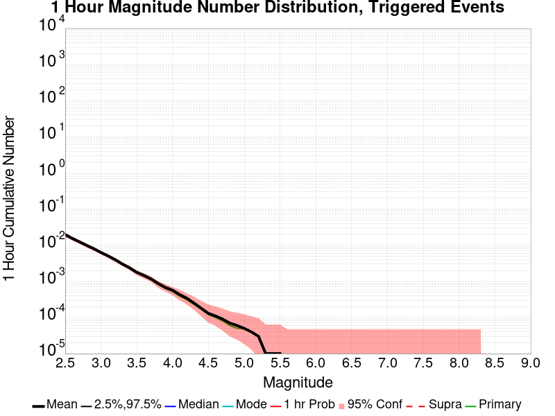
| Mag | Mean | 2.5 %ile | 97.5 %ile | Median | Mode | 1 hr Probability | 1 hr Prob 95% Conf | 1 hr Supra-Seis Prob | Primary Aftershocks Mean |
|---|---|---|---|---|---|---|---|---|---|
| M≥2.5 | 0.020 | 0.000 | 0.000 | 0.000 | 0.000 | 0.018 (1.83%) | [1.69% 1.98%] | 0.000 (0.00%) | 0.018 |
| M≥2.6 | 0.016 | 0.000 | 0.000 | 0.000 | 0.000 | 0.015 (1.48%) | [1.35% 1.62%] | 0.000 (0.00%) | 0.015 |
| M≥2.7 | 0.013 | 0.000 | 0.000 | 0.000 | 0.000 | 0.012 (1.17%) | [1.05% 1.29%] | 0.000 (0.00%) | 0.012 |
| M≥2.8 | 9.88E-3 | 0.000 | 0.000 | 0.000 | 0.000 | 9.19E-3 (0.92%) | [0.82% 1.03%] | 0.000 (0.00%) | 9.00E-3 |
| M≥2.9 | 7.79E-3 | 0.000 | 0.000 | 0.000 | 0.000 | 7.29E-3 (0.73%) | [0.64% 0.83%] | 0.000 (0.00%) | 7.10E-3 |
| M≥3 | 6.11E-3 | 0.000 | 0.000 | 0.000 | 0.000 | 5.73E-3 (0.57%) | [0.49% 0.66%] | 0.000 (0.00%) | 5.64E-3 |
| M≥3.1 | 5.02E-3 | 0.000 | 0.000 | 0.000 | 0.000 | 4.67E-3 (0.47%) | [0.40% 0.55%] | 0.000 (0.00%) | 4.58E-3 |
| M≥3.2 | 4.14E-3 | 0.000 | 0.000 | 0.000 | 0.000 | 3.86E-3 (0.39%) | [0.32% 0.46%] | 0.000 (0.00%) | 3.77E-3 |
| M≥3.3 | 3.12E-3 | 0.000 | 0.000 | 0.000 | 0.000 | 2.93E-3 (0.29%) | [0.24% 0.36%] | 0.000 (0.00%) | 2.90E-3 |
| M≥3.4 | 2.52E-3 | 0.000 | 0.000 | 0.000 | 0.000 | 2.34E-3 (0.23%) | [0.19% 0.29%] | 0.000 (0.00%) | 2.31E-3 |
| M≥3.5 | 2.09E-3 | 0.000 | 0.000 | 0.000 | 0.000 | 1.99E-3 (0.20%) | [0.15% 0.26%] | 0.000 (0.00%) | 1.99E-3 |
| M≥3.6 | 1.62E-3 | 0.000 | 0.000 | 0.000 | 0.000 | 1.53E-3 (0.15%) | [0.11% 0.20%] | 0.000 (0.00%) | 1.53E-3 |
| M≥3.7 | 1.40E-3 | 0.000 | 0.000 | 0.000 | 0.000 | 1.34E-3 (0.13%) | [0.10% 0.18%] | 0.000 (0.00%) | 1.31E-3 |
| M≥3.8 | 1.03E-3 | 0.000 | 0.000 | 0.000 | 0.000 | 9.97E-4 (0.10%) | [0.07% 0.14%] | 0.000 (0.00%) | 9.66E-4 |
| M≥3.9 | 7.79E-4 | 0.000 | 0.000 | 0.000 | 0.000 | 7.48E-4 (0.07%) | [0.05% 0.11%] | 0.000 (0.00%) | 7.17E-4 |
| M≥4 | 6.23E-4 | 0.000 | 0.000 | 0.000 | 0.000 | 5.92E-4 (0.06%) | [0.04% 0.09%] | 0.000 (0.00%) | 5.61E-4 |
| M≥4.1 | 4.98E-4 | 0.000 | 0.000 | 0.000 | 0.000 | 4.67E-4 (0.05%) | [0.03% 0.08%] | 0.000 (0.00%) | 4.36E-4 |
| M≥4.2 | 4.36E-4 | 0.000 | 0.000 | 0.000 | 0.000 | 4.05E-4 (0.04%) | [0.02% 0.07%] | 0.000 (0.00%) | 3.74E-4 |
| M≥4.3 | 3.43E-4 | 0.000 | 0.000 | 0.000 | 0.000 | 3.43E-4 (0.03%) | [0.02% 0.06%] | 0.000 (0.00%) | 3.12E-4 |
| M≥4.4 | 2.49E-4 | 0.000 | 0.000 | 0.000 | 0.000 | 2.49E-4 (0.02%) | [0.01% 0.05%] | 0.000 (0.00%) | 2.49E-4 |
| M≥4.5 | 1.87E-4 | 0.000 | 0.000 | 0.000 | 0.000 | 1.87E-4 (0.02%) | [0.01% 0.04%] | 0.000 (0.00%) | 1.87E-4 |
| M≥4.6 | 1.56E-4 | 0.000 | 0.000 | 0.000 | 0.000 | 1.56E-4 (0.02%) | [0.01% 0.04%] | 0.000 (0.00%) | 1.56E-4 |
| M≥4.7 | 1.56E-4 | 0.000 | 0.000 | 0.000 | 0.000 | 1.56E-4 (0.02%) | [0.01% 0.04%] | 0.000 (0.00%) | 1.56E-4 |
| M≥4.8 | 1.25E-4 | 0.000 | 0.000 | 0.000 | 0.000 | 1.25E-4 (0.01%) | [0.00% 0.03%] | 0.000 (0.00%) | 1.25E-4 |
| M≥4.9 | 9.35E-5 | 0.000 | 0.000 | 0.000 | 0.000 | 9.35E-5 (0.01%) | [0.00% 0.03%] | 0.000 (0.00%) | 9.35E-5 |
| M≥5 | 9.35E-5 | 0.000 | 0.000 | 0.000 | 0.000 | 9.35E-5 (0.01%) | [0.00% 0.03%] | 0.000 (0.00%) | 9.35E-5 |
| M≥5.1 | 6.23E-5 | 0.000 | 0.000 | 0.000 | 0.000 | 6.23E-5 (0.01%) | [0.00% 0.03%] | 0.000 (0.00%) | 6.23E-5 |
| M≥5.2 | 3.12E-5 | 0.000 | 0.000 | 0.000 | 0.000 | 3.12E-5 (0.00%) | [0.00% 0.02%] | 0.000 (0.00%) | 3.12E-5 |
| M≥5.3 | 0.000 | 0.000 | 0.000 | 0.000 | 0.000 | 0.000 (0.00%) | [0.00% 0.01%] | 0.000 (0.00%) | 0.000 |
| M≥5.4 | 0.000 | 0.000 | 0.000 | 0.000 | 0.000 | 0.000 (0.00%) | [0.00% 0.01%] | 0.000 (0.00%) | 0.000 |
| M≥5.5 | 0.000 | 0.000 | 0.000 | 0.000 | 0.000 | 0.000 (0.00%) | [0.00% 0.01%] | 0.000 (0.00%) | 0.000 |
| M≥5.6 | 0.000 | 0.000 | 0.000 | 0.000 | 0.000 | 0.000 (0.00%) | [0.00% 0.01%] | 0.000 (0.00%) | 0.000 |
| M≥5.7 | 0.000 | 0.000 | 0.000 | 0.000 | 0.000 | 0.000 (0.00%) | [0.00% 0.01%] | 0.000 (0.00%) | 0.000 |
| M≥5.8 | 0.000 | 0.000 | 0.000 | 0.000 | 0.000 | 0.000 (0.00%) | [0.00% 0.01%] | 0.000 (0.00%) | 0.000 |
| M≥5.9 | 0.000 | 0.000 | 0.000 | 0.000 | 0.000 | 0.000 (0.00%) | [0.00% 0.01%] | 0.000 (0.00%) | 0.000 |
| M≥6 | 0.000 | 0.000 | 0.000 | 0.000 | 0.000 | 0.000 (0.00%) | [0.00% 0.01%] | 0.000 (0.00%) | 0.000 |
| M≥6.1 | 0.000 | 0.000 | 0.000 | 0.000 | 0.000 | 0.000 (0.00%) | [0.00% 0.01%] | 0.000 (0.00%) | 0.000 |
| M≥6.2 | 0.000 | 0.000 | 0.000 | 0.000 | 0.000 | 0.000 (0.00%) | [0.00% 0.01%] | 0.000 (0.00%) | 0.000 |
| M≥6.3 | 0.000 | 0.000 | 0.000 | 0.000 | 0.000 | 0.000 (0.00%) | [0.00% 0.01%] | 0.000 (0.00%) | 0.000 |
| M≥6.4 | 0.000 | 0.000 | 0.000 | 0.000 | 0.000 | 0.000 (0.00%) | [0.00% 0.01%] | 0.000 (0.00%) | 0.000 |
| M≥6.5 | 0.000 | 0.000 | 0.000 | 0.000 | 0.000 | 0.000 (0.00%) | [0.00% 0.01%] | 0.000 (0.00%) | 0.000 |
| M≥6.6 | 0.000 | 0.000 | 0.000 | 0.000 | 0.000 | 0.000 (0.00%) | [0.00% 0.01%] | 0.000 (0.00%) | 0.000 |
| M≥6.7 | 0.000 | 0.000 | 0.000 | 0.000 | 0.000 | 0.000 (0.00%) | [0.00% 0.01%] | 0.000 (0.00%) | 0.000 |
| M≥6.8 | 0.000 | 0.000 | 0.000 | 0.000 | 0.000 | 0.000 (0.00%) | [0.00% 0.01%] | 0.000 (0.00%) | 0.000 |
| M≥6.9 | 0.000 | 0.000 | 0.000 | 0.000 | 0.000 | 0.000 (0.00%) | [0.00% 0.01%] | 0.000 (0.00%) | 0.000 |
| M≥7 | 0.000 | 0.000 | 0.000 | 0.000 | 0.000 | 0.000 (0.00%) | [0.00% 0.01%] | 0.000 (0.00%) | 0.000 |
| M≥7.1 | 0.000 | 0.000 | 0.000 | 0.000 | 0.000 | 0.000 (0.00%) | [0.00% 0.01%] | 0.000 (0.00%) | 0.000 |
| M≥7.2 | 0.000 | 0.000 | 0.000 | 0.000 | 0.000 | 0.000 (0.00%) | [0.00% 0.01%] | 0.000 (0.00%) | 0.000 |
| M≥7.3 | 0.000 | 0.000 | 0.000 | 0.000 | 0.000 | 0.000 (0.00%) | [0.00% 0.01%] | 0.000 (0.00%) | 0.000 |
| M≥7.4 | 0.000 | 0.000 | 0.000 | 0.000 | 0.000 | 0.000 (0.00%) | [0.00% 0.01%] | 0.000 (0.00%) | 0.000 |
| M≥7.5 | 0.000 | 0.000 | 0.000 | 0.000 | 0.000 | 0.000 (0.00%) | [0.00% 0.01%] | 0.000 (0.00%) | 0.000 |
| M≥7.6 | 0.000 | 0.000 | 0.000 | 0.000 | 0.000 | 0.000 (0.00%) | [0.00% 0.01%] | 0.000 (0.00%) | 0.000 |
| M≥7.7 | 0.000 | 0.000 | 0.000 | 0.000 | 0.000 | 0.000 (0.00%) | [0.00% 0.01%] | 0.000 (0.00%) | 0.000 |
| M≥7.8 | 0.000 | 0.000 | 0.000 | 0.000 | 0.000 | 0.000 (0.00%) | [0.00% 0.01%] | 0.000 (0.00%) | 0.000 |
| M≥7.9 | 0.000 | 0.000 | 0.000 | 0.000 | 0.000 | 0.000 (0.00%) | [0.00% 0.01%] | 0.000 (0.00%) | 0.000 |
| M≥8 | 0.000 | 0.000 | 0.000 | 0.000 | 0.000 | 0.000 (0.00%) | [0.00% 0.01%] | 0.000 (0.00%) | 0.000 |
| M≥8.1 | 0.000 | 0.000 | 0.000 | 0.000 | 0.000 | 0.000 (0.00%) | [0.00% 0.01%] | 0.000 (0.00%) | 0.000 |
| M≥8.2 | 0.000 | 0.000 | 0.000 | 0.000 | 0.000 | 0.000 (0.00%) | [0.00% 0.01%] | 0.000 (0.00%) | 0.000 |
| M≥8.3 | 0.000 | 0.000 | 0.000 | 0.000 | 0.000 | 0.000 (0.00%) | [0.00% 0.01%] | 0.000 (0.00%) | 0.000 |
| M≥8.4 | 0.000 | 0.000 | 0.000 | 0.000 | 0.000 | 0.000 (0.00%) | [0.00% 0.01%] | 0.000 (0.00%) | 0.000 |
| M≥8.5 | 0.000 | 0.000 | 0.000 | 0.000 | 0.000 | 0.000 (0.00%) | [0.00% 0.01%] | 0.000 (0.00%) | 0.000 |
| M≥8.6 | 0.000 | 0.000 | 0.000 | 0.000 | 0.000 | 0.000 (0.00%) | [0.00% 0.01%] | 0.000 (0.00%) | 0.000 |
| M≥8.7 | 0.000 | 0.000 | 0.000 | 0.000 | 0.000 | 0.000 (0.00%) | [0.00% 0.01%] | 0.000 (0.00%) | 0.000 |
| M≥8.8 | 0.000 | 0.000 | 0.000 | 0.000 | 0.000 | 0.000 (0.00%) | [0.00% 0.01%] | 0.000 (0.00%) | 0.000 |
| M≥8.9 | 0.000 | 0.000 | 0.000 | 0.000 | 0.000 | 0.000 (0.00%) | [0.00% 0.01%] | 0.000 (0.00%) | 0.000 |
| M≥9 | 0.000 | 0.000 | 0.000 | 0.000 | 0.000 | 0.000 (0.00%) | [0.00% 0.01%] | 0.000 (0.00%) | 0.000 |
These plots show how the probability of ruptures of various magnitudes within the region used to fetch ComCat trigger ruptures changes over time
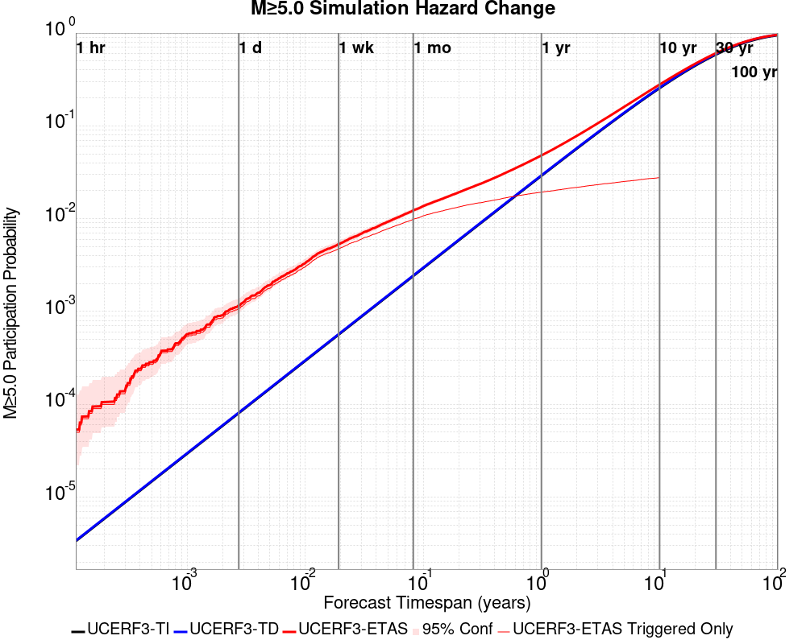
| Forecast Duration | UCERF3-ETAS [95% Conf] | UCERF3-ETAS Triggered Only | UCERF3-TD | UCERF3-ETAS/TD Gain | UCERF3-TI |
|---|---|---|---|---|---|
| 1 Hour | 9.69E-5 [2.75E-5 - 3.01E-4] | 9.35E-5 | 3.40E-6 | 28.5 | 3.35E-6 |
| 1 Day | 1.11E-3 [8.01E-4 - 1.54E-3] | 1.03E-3 | 8.16E-5 | 13.6 | 8.05E-5 |
| 1 Week | 4.93E-3 [4.25E-3 - 5.73E-3] | 4.36E-3 | 5.71E-4 | 8.64 | 5.63E-4 |
| 1 Month | 0.012 [0.011 - 0.013] | 9.53E-3 | 2.44E-3 | 4.89 | 2.41E-3 |
| 1 Year | 0.048 [0.047 - 0.050] | 0.019 | 0.029 | 1.64 | 0.029 |
| 10 Years | 0.279 [0.277 - 0.280] | 0.027 | 0.258 | 1.08 | 0.255 |
| 30 Years | 0.607 [0.606 - 0.608] * | * | 0.596 | 1.02 * | 0.586 |
| 100 Years | 0.957 [0.957 - 0.957] * | * | 0.956 | 1 * | 0.947 |
* forecast duration is longer than simulation length, only ETAS ruptures from the first 10 years are included

| Forecast Duration | UCERF3-ETAS [95% Conf] | UCERF3-ETAS Triggered Only | UCERF3-TD | UCERF3-ETAS/TD Gain | UCERF3-TI |
|---|---|---|---|---|---|
| 1 Hour | 4.38E-7 [4.38E-7 - 1.50E-4] | 0.000 | 4.38E-7 | 1 | 3.94E-7 |
| 1 Day | 4.17E-5 [1.21E-5 - 2.13E-4] | 3.12E-5 | 1.05E-5 | 3.96 | 9.46E-6 |
| 1 Week | 1.67E-4 [9.78E-5 - 3.71E-4] | 9.35E-5 | 7.37E-5 | 2.27 | 6.62E-5 |
| 1 Month | 7.52E-4 [5.64E-4 - 1.07E-3] | 4.36E-4 | 3.16E-4 | 2.38 | 2.84E-4 |
| 1 Year | 5.17E-3 [4.81E-3 - 5.65E-3] | 1.34E-3 | 3.84E-3 | 1.35 | 3.45E-3 |
| 10 Years | 0.041 [0.040 - 0.041] | 1.99E-3 | 0.039 | 1.05 | 0.034 |
| 30 Years | 0.122 [0.122 - 0.123] * | * | 0.120 | 1.01 * | 0.098 |
| 100 Years | 0.408 [0.408 - 0.409] * | * | 0.407 | 1 * | 0.292 |
* forecast duration is longer than simulation length, only ETAS ruptures from the first 10 years are included

| Forecast Duration | UCERF3-ETAS [95% Conf] | UCERF3-ETAS Triggered Only | UCERF3-TD | UCERF3-ETAS/TD Gain | UCERF3-TI |
|---|---|---|---|---|---|
| 1 Hour | 2.27E-7 [2.27E-7 - 1.49E-4] | 0.000 | 2.27E-7 | 1 | 1.83E-7 |
| 1 Day | 5.45E-6 [5.45E-6 - 1.55E-4] | 0.000 | 5.45E-6 | 1 | 4.40E-6 |
| 1 Week | 3.81E-5 [3.81E-5 - 1.87E-4] | 0.000 | 3.81E-5 | 1 | 3.08E-5 |
| 1 Month | 1.63E-4 [1.63E-4 - 3.13E-4] | 0.000 | 1.63E-4 | 1 | 1.32E-4 |
| 1 Year | 2.02E-3 [1.99E-3 - 2.19E-3] | 3.12E-5 | 1.99E-3 | 1.02 | 1.61E-3 |
| 10 Years | 0.021 [0.021 - 0.021] | 9.35E-5 | 0.021 | 1 | 0.016 |
| 30 Years | 0.069 [0.068 - 0.069] * | * | 0.068 | 1 * | 0.047 |
| 100 Years | 0.272 [0.272 - 0.272] * | * | 0.272 | 1 * | 0.148 |
* forecast duration is longer than simulation length, only ETAS ruptures from the first 10 years are included

| Section Name | Strike, Dip, Rake | # Hypos In Poly | Max Mag w/ Hypo In Poly | # Surfs In Poly | Max Mag w/ Surf In Poly | Min Dist To Any (km) | Min Poly Dist To Any (km) | Min Dist To Largest (km) | Min Poly Dist To Largest (km) |
|---|---|---|---|---|---|---|---|---|---|
| San Jacinto (Anza) rev | 127, 90, 180 | 17 | 3.66 | 17 | 3.66 | 0.323 | 0.000 | 0.771 | 0.516 |
| San Jacinto (Coyote Creek) | 133, 90, 180 | 8 | 4.87 | 8 | 4.87 | 3.377 | 0.000 | 3.961 | 0.000 |
| San Jacinto (Clark) rev | 124, 90, 180 | 7 | 4.87 | 7 | 4.87 | 0.323 | 0.000 | 0.721 | 0.000 |
These are map plots of individual catalogs from the simulations, selected as the closest catalog to each of the given percentiles in terms of total number of events.
| Duration | p0.0 %-ile | p25.0 %-ile | p50.0 %-ile | p75.0 %-ile | p90.0 %-ile | p95.0 %-ile | p97.5 %-ile | p98.0 %-ile | p99.0 %-ile | p99.5 %-ile | p99.9 %-ile | p99.996885 %-ile |
|---|---|---|---|---|---|---|---|---|---|---|---|---|
| 1 Week |  |  |  |  |  |  |  | 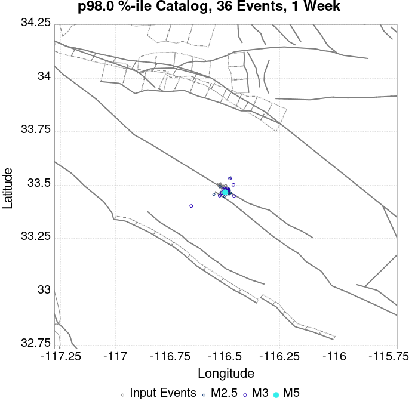 |  |  | 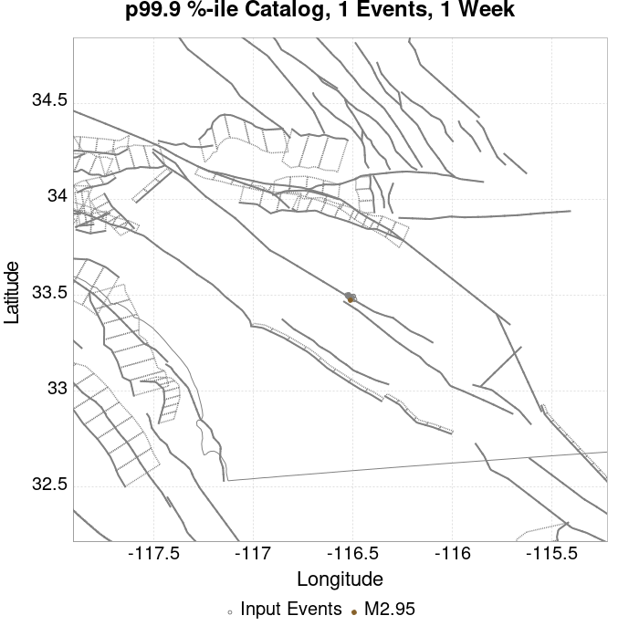 |  |
| 1 Month | 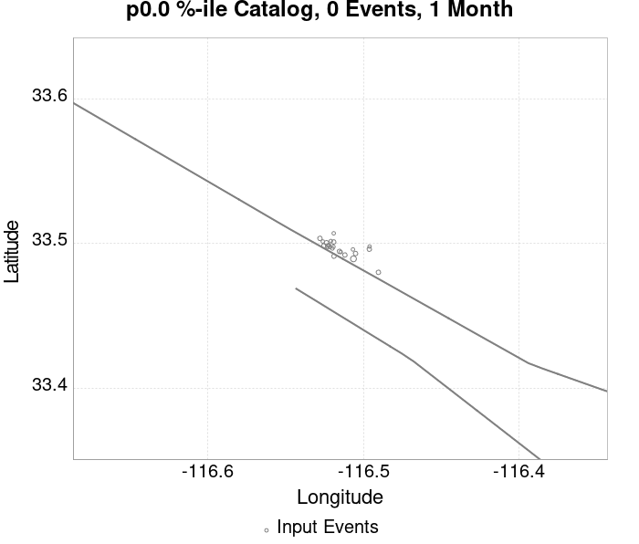 |  |  | 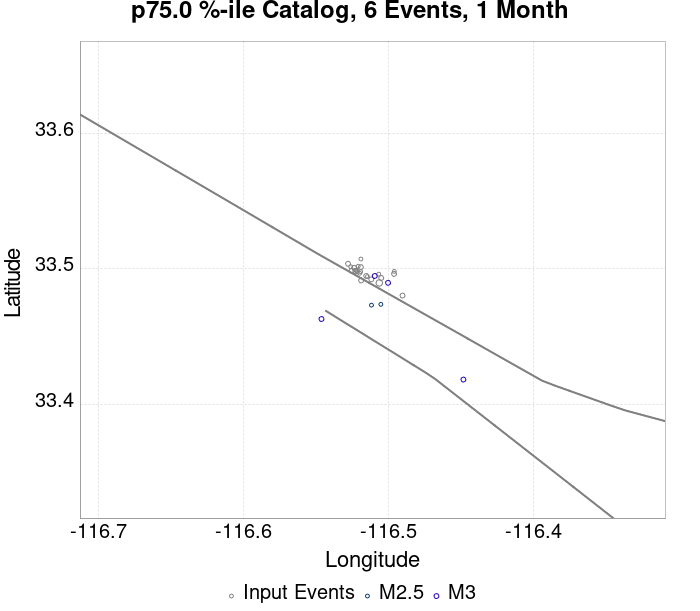 |  |  |  | 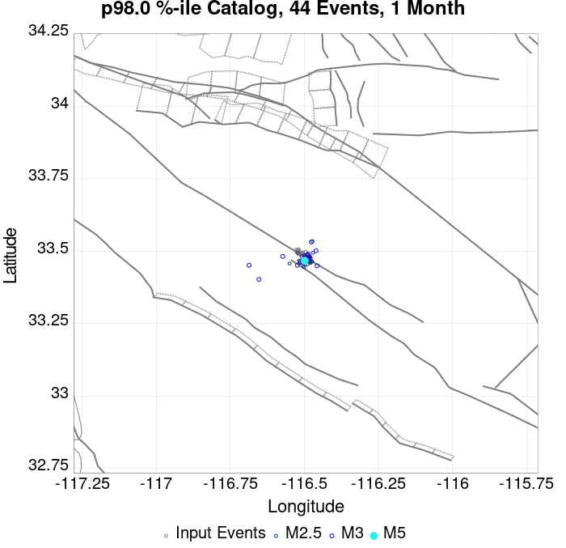 | 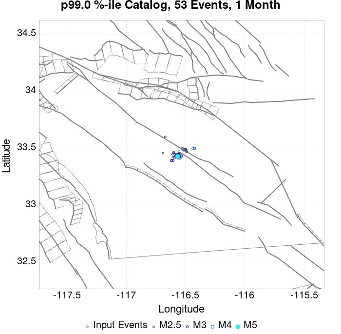 | 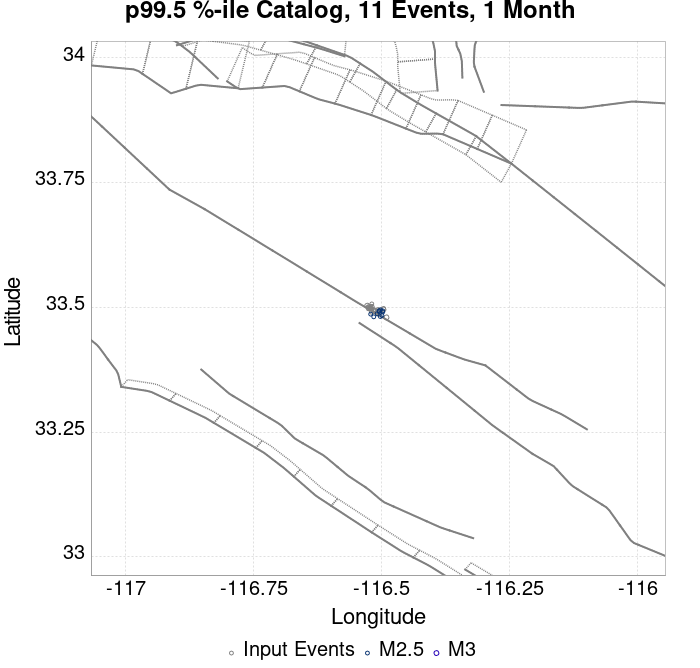 |  | |
| 1 Year |  |  |  | 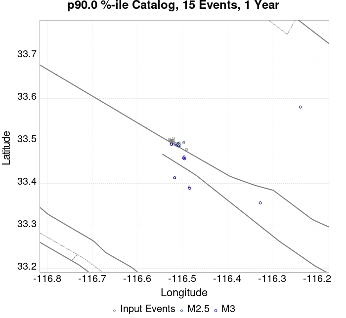 |  |  |  |  |  |  |  | |
| 10 Year |  |  |  |  |  |  |  |  |  |  |
These plots compare simulated sequences with data from ComCat. All plots only consider events with hypocenters inside the ComCat region defined in the JSON input file.
Last updated at 2020/04/08 19:19:24 UTC, 1.5 hours after the simulation start time.
Total matching ComCat events found: 0
| Incremental MND | Cumulative MND |
|---|---|
| 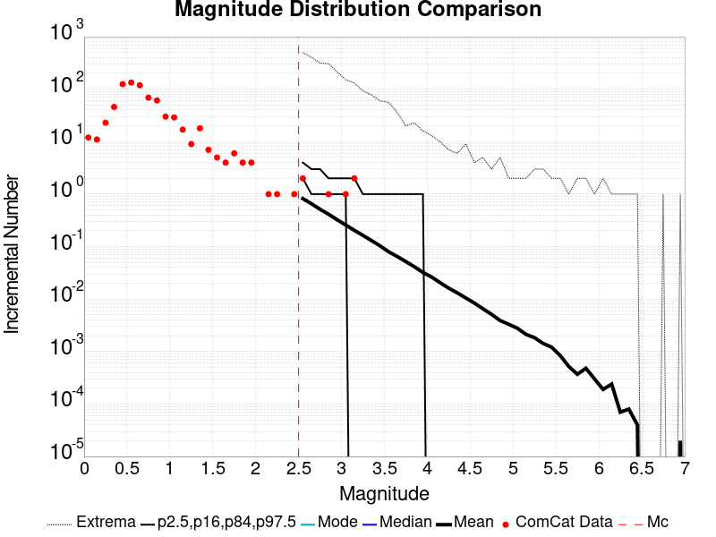 |  |
The following plots compare simulation results with ComCat data above a magnitude threshold. Plots labeled as M≥Mc(t) use the time-dependent magnitude of completeness (Mc) defined in Helmstetter et al. (2006), which is plotted below. In the case of multiple M≥5 ruptures, either as input to the simulation or in the comparison data, the maximum calculated time-dependent Mc is used. This time-dependent Mc function is plotted below.

| M≥Mc(t) | M≥2.5 | M≥3 | M≥3.5 | M≥4 |
|---|---|---|---|---|
| 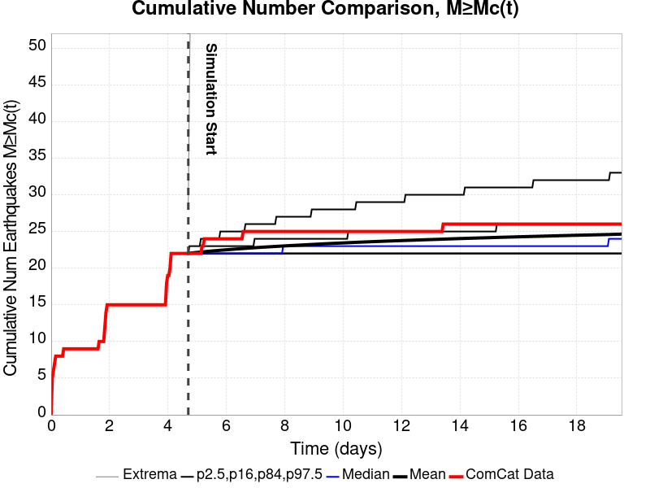 |  |  |  |  |
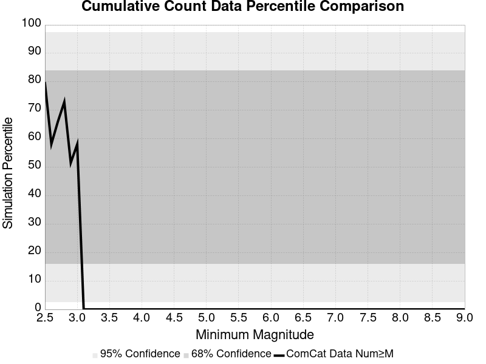
Note: maps labeled 'Forecast' are for a duration that extends into the future, only forecasted values are plotted (ComCat data omitted)
| Current (1.5 Hour) | Forecast: 1 Day | Forecast: 1 Week | Forecast: 1 Month | Forecast: 1 Year | |
|---|---|---|---|---|---|
| M≥Mc(t) |  | 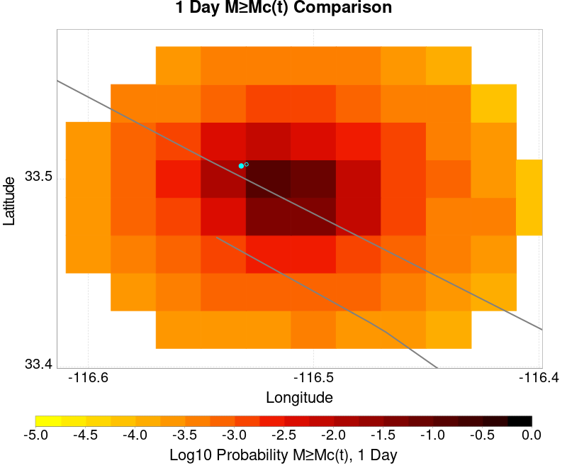 |  |  | |
| Prob: 2.51%, Actual: 0 | Prob: 26.38% | Prob: 64.87% | Prob: 83.71% | Prob: 95.05% | |
| M≥2.5 |  |  |  |  | |
| Prob: 2.51%, Actual: 0 | Prob: 26.38% | Prob: 64.87% | Prob: 83.71% | Prob: 95.05% | |
| M≥3 | 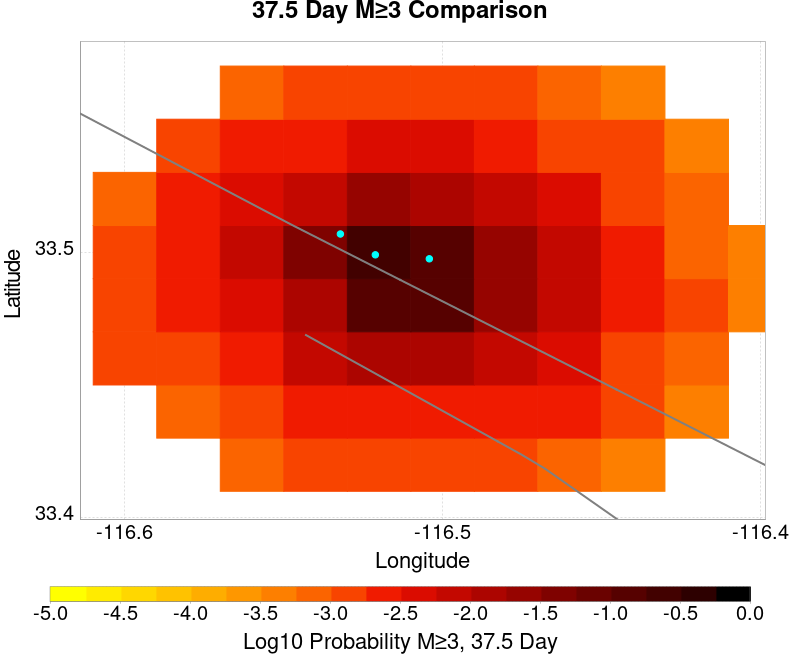 |  | 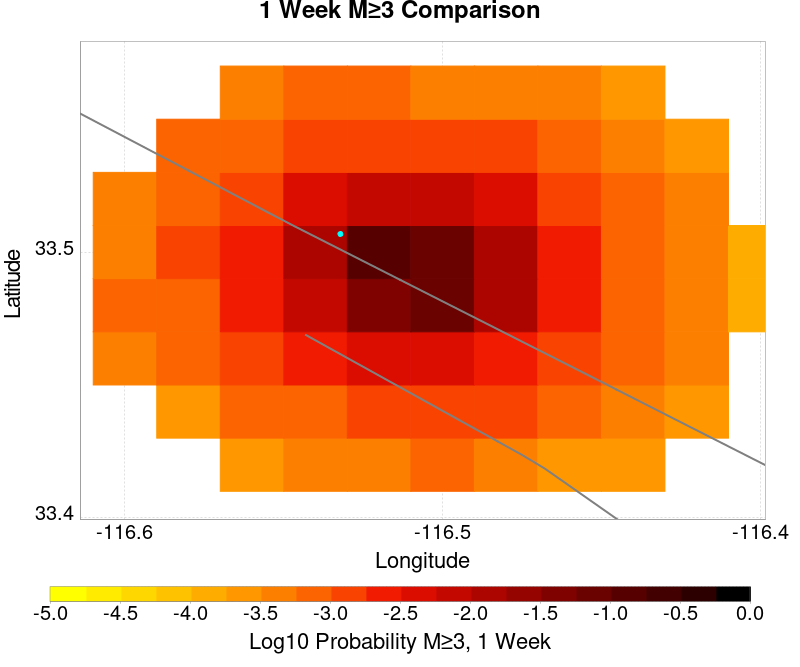 |  | 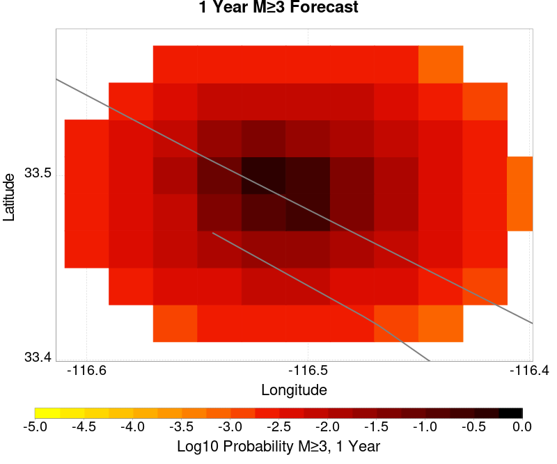 |
| Prob: 0.82%, Actual: 0 | Prob: 9.91% | Prob: 31.43% | Prob: 50.29% | Prob: 70.55% | |
| M≥3.5 |  | 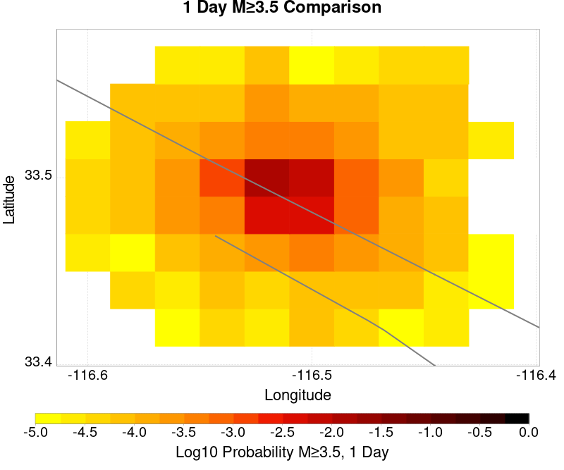 |  |  |  |
| Prob: 0.27%, Actual: 0 | Prob: 3.42% | Prob: 12.40% | Prob: 22.44% | Prob: 37.38% | |
| M≥4 |  |  |  |  |  |
| Prob: 0.09%, Actual: 0 | Prob: 1.07% | Prob: 4.19% | Prob: 8.34% | Prob: 15.58% | |
| M≥4.5 |  |  |  |  |  |
| Prob: 0.02%, Actual: 0 | Prob: 0.31% | Prob: 1.40% | Prob: 2.83% | Prob: 5.72% | |
| M≥5 |  |  |  |  | 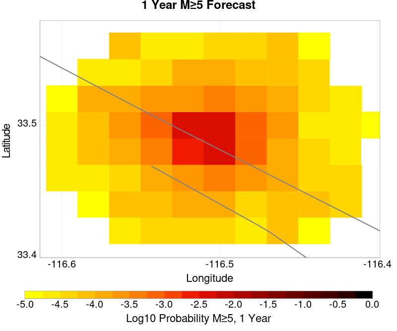 |
| Prob: 0.01%, Actual: 0 | Prob: 0.10% | Prob: 0.43% | Prob: 0.95% | Prob: 1.94% | |
| M≥5.5 |  |  | 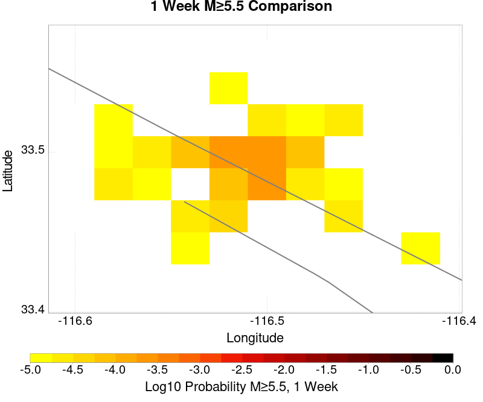 |  |  |
| Prob: 0.00%, Actual: 0 | Prob: 0.02% | Prob: 0.11% | Prob: 0.23% | Prob: 0.54% |
Note: maps labeled 'Forecast' are for a duration that extends into the future, only forecasted values are plotted (ComCat data omitted)
| Current (1.5 Hour) | Forecast: 1 Day | Forecast: 1 Week | Forecast: 1 Month | Forecast: 1 Year | |
|---|---|---|---|---|---|
| M≥Mc(t) |  |  | 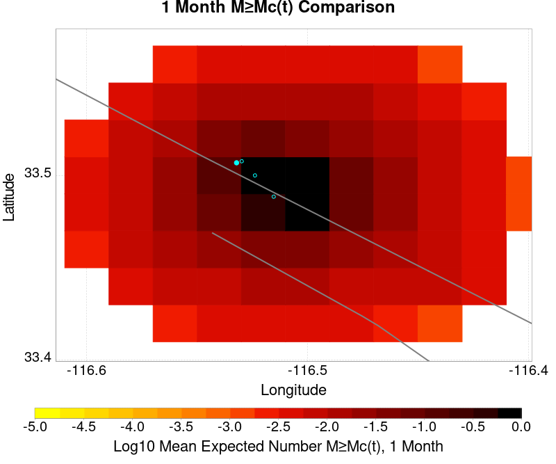 |  | |
| Mean: 0.029, Actual: 0 | Mean: 0.394 | Mean: 1.696 | Mean: 3.571 | Mean: 7.694 | |
| M≥2.5 | 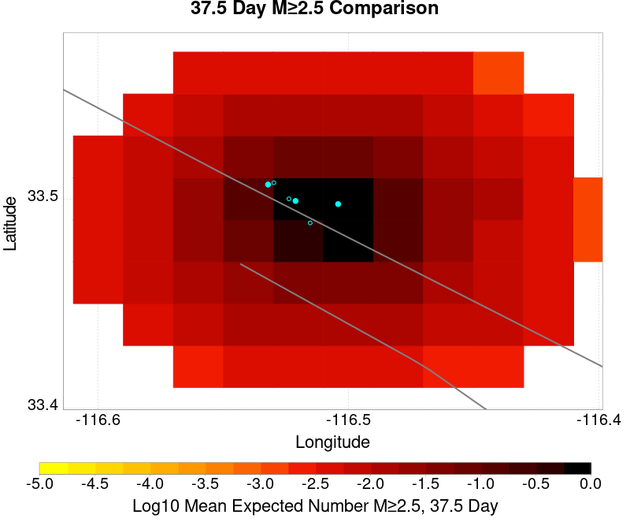 |  |  |  |  |
| Mean: 0.029, Actual: 0 | Mean: 0.394 | Mean: 1.696 | Mean: 3.571 | Mean: 7.694 | |
| M≥3 |  |  | 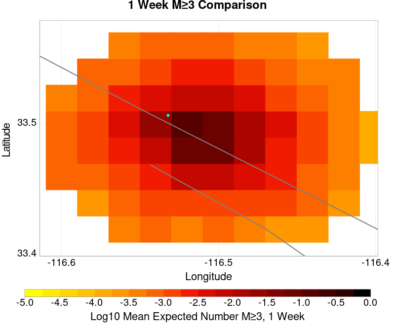 |  |  |
| Mean: 9.07E-3, Actual: 0 | Mean: 0.126 | Mean: 0.530 | Mean: 1.121 | Mean: 2.424 | |
| M≥3.5 |  |  |  |  | 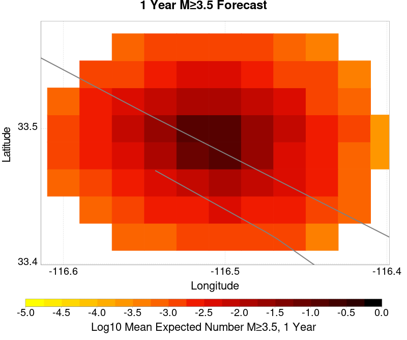 |
| Mean: 2.96E-3, Actual: 0 | Mean: 0.041 | Mean: 0.168 | Mean: 0.355 | Mean: 0.767 | |
| M≥4 | 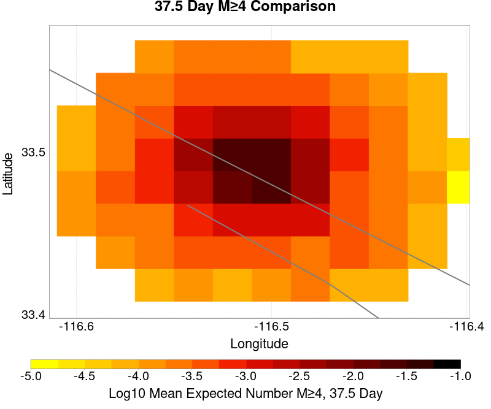 |  |  |  |  |
| Mean: 9.97E-4, Actual: 0 | Mean: 0.012 | Mean: 0.051 | Mean: 0.111 | Mean: 0.242 | |
| M≥4.5 |  |  |  |  | 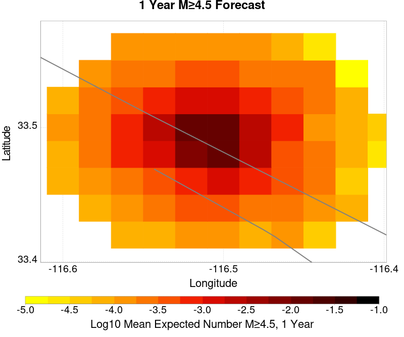 |
| Mean: 2.18E-4, Actual: 0 | Mean: 3.58E-3 | Mean: 0.016 | Mean: 0.035 | Mean: 0.076 | |
| M≥5 |  | 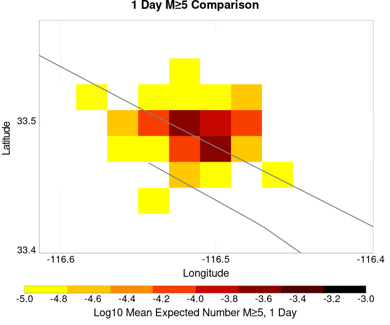 |  | 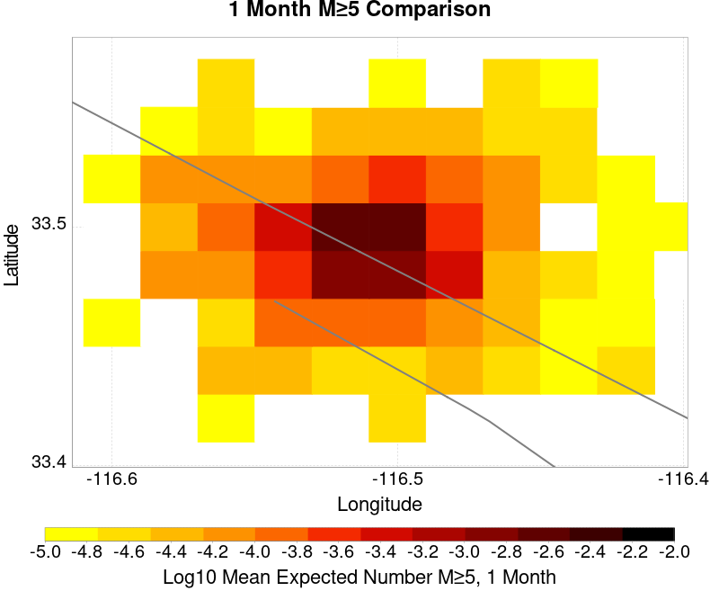 |  |
| Mean: 1.25E-4, Actual: 0 | Mean: 1.06E-3 | Mean: 4.86E-3 | Mean: 0.011 | Mean: 0.023 | |
| M≥5.5 |  | 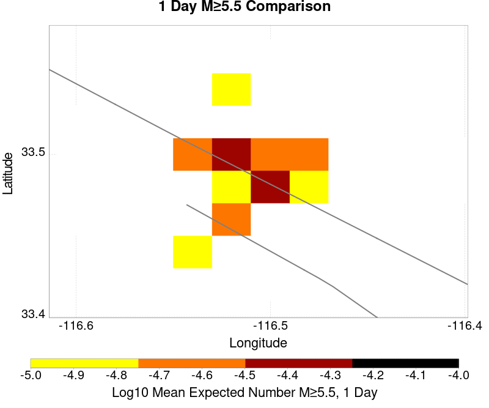 |  |  |  |
| Mean: 0.000, Actual: 0 | Mean: 2.18E-4 | Mean: 1.12E-3 | Mean: 2.46E-3 | Mean: 6.23E-3 |
| M≥Mc(t) | M≥2.5 | M≥3 | M≥3.5 | M≥4 | M≥4.5 | M≥5 | M≥5.5 |
|---|---|---|---|---|---|---|---|
| 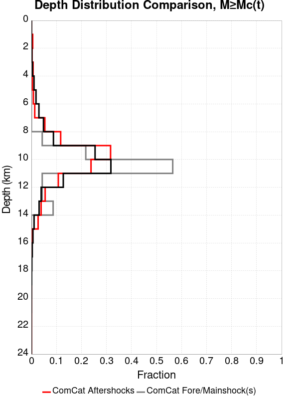 |  |  |  |  |  | 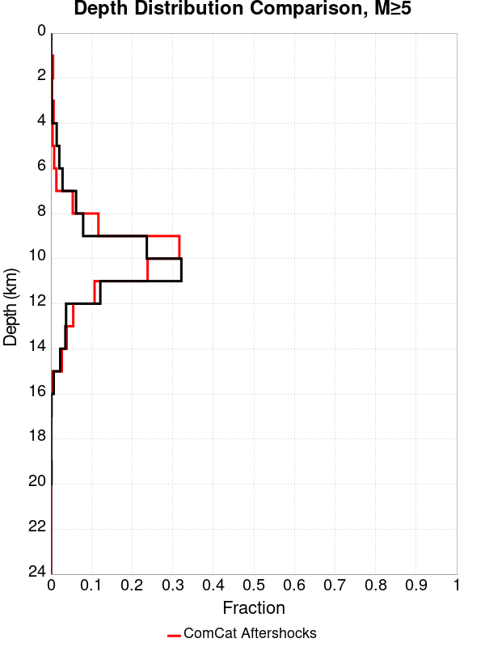 |  |
First 10 of 15 with matching ruptures shown
| Parent Name | Triggered 10 Year Mean Count | Triggered 1 Day Prob | Triggered 1 Day 95% Conf | Triggered 1 Week Prob | Triggered 1 Week 95% Conf | Triggered 1 Month Prob | Triggered 1 Month 95% Conf | Triggered 1 Year Prob | Triggered 1 Year 95% Conf | Triggered 10 Year Prob | Triggered 10 Year 95% Conf | Triggered 10 Year Primary Mean Count |
|---|---|---|---|---|---|---|---|---|---|---|---|---|
| San Jacinto (Clark) rev | 2.1806854E-4 | 0.000 (0.00%) | [0.00% 0.01%] | 0.000 (0.00%) | [0.00% 0.01%] | 0.000 (0.00%) | [0.00% 0.01%] | 1.25E-4 (0.01%) | [0.00% 0.03%] | 2.18E-4 (0.02%) | [0.01% 0.05%] | 1.246106E-4 |
| San Jacinto (Anza) rev | 1.246106E-4 | 0.000 (0.00%) | [0.00% 0.01%] | 0.000 (0.00%) | [0.00% 0.01%] | 0.000 (0.00%) | [0.00% 0.01%] | 6.23E-5 (0.01%) | [0.00% 0.03%] | 1.25E-4 (0.01%) | [0.00% 0.03%] | 9.3457944E-5 |
| Brawley (Seismic Zone) alt 1 | 3.115265E-5 | 0.000 (0.00%) | [0.00% 0.01%] | 0.000 (0.00%) | [0.00% 0.01%] | 0.000 (0.00%) | [0.00% 0.01%] | 0.000 (0.00%) | [0.00% 0.01%] | 3.12E-5 (0.00%) | [0.00% 0.02%] | 0.0 |
| Cleghorn | 3.115265E-5 | 0.000 (0.00%) | [0.00% 0.01%] | 0.000 (0.00%) | [0.00% 0.01%] | 0.000 (0.00%) | [0.00% 0.01%] | 0.000 (0.00%) | [0.00% 0.01%] | 3.12E-5 (0.00%) | [0.00% 0.02%] | 0.0 |
| Imperial | 3.115265E-5 | 0.000 (0.00%) | [0.00% 0.01%] | 0.000 (0.00%) | [0.00% 0.01%] | 0.000 (0.00%) | [0.00% 0.01%] | 0.000 (0.00%) | [0.00% 0.01%] | 3.12E-5 (0.00%) | [0.00% 0.02%] | 0.0 |
| North Frontal (East) | 3.115265E-5 | 0.000 (0.00%) | [0.00% 0.01%] | 0.000 (0.00%) | [0.00% 0.01%] | 0.000 (0.00%) | [0.00% 0.01%] | 0.000 (0.00%) | [0.00% 0.01%] | 3.12E-5 (0.00%) | [0.00% 0.02%] | 0.0 |
| North Frontal (West) | 3.115265E-5 | 0.000 (0.00%) | [0.00% 0.01%] | 0.000 (0.00%) | [0.00% 0.01%] | 0.000 (0.00%) | [0.00% 0.01%] | 0.000 (0.00%) | [0.00% 0.01%] | 3.12E-5 (0.00%) | [0.00% 0.02%] | 0.0 |
| San Andreas (Coachella) rev | 3.115265E-5 | 0.000 (0.00%) | [0.00% 0.01%] | 0.000 (0.00%) | [0.00% 0.01%] | 0.000 (0.00%) | [0.00% 0.01%] | 0.000 (0.00%) | [0.00% 0.01%] | 3.12E-5 (0.00%) | [0.00% 0.02%] | 3.115265E-5 |
| San Jacinto (Borrego) | 3.115265E-5 | 0.000 (0.00%) | [0.00% 0.01%] | 0.000 (0.00%) | [0.00% 0.01%] | 0.000 (0.00%) | [0.00% 0.01%] | 0.000 (0.00%) | [0.00% 0.01%] | 3.12E-5 (0.00%) | [0.00% 0.02%] | 3.115265E-5 |
| San Jacinto (Coyote Creek) | 3.115265E-5 | 0.000 (0.00%) | [0.00% 0.01%] | 0.000 (0.00%) | [0.00% 0.01%] | 0.000 (0.00%) | [0.00% 0.01%] | 0.000 (0.00%) | [0.00% 0.01%] | 3.12E-5 (0.00%) | [0.00% 0.02%] | 3.115265E-5 |
First 10 of 12 with matching ruptures shown
| Parent Name | Triggered 10 Year Mean Count | Triggered 1 Day Prob | Triggered 1 Day 95% Conf | Triggered 1 Week Prob | Triggered 1 Week 95% Conf | Triggered 1 Month Prob | Triggered 1 Month 95% Conf | Triggered 1 Year Prob | Triggered 1 Year 95% Conf | Triggered 10 Year Prob | Triggered 10 Year 95% Conf | Triggered 10 Year Primary Mean Count |
|---|---|---|---|---|---|---|---|---|---|---|---|---|
| San Jacinto (Clark) rev | 1.5576323E-4 | 0.000 (0.00%) | [0.00% 0.01%] | 0.000 (0.00%) | [0.00% 0.01%] | 0.000 (0.00%) | [0.00% 0.01%] | 9.35E-5 (0.01%) | [0.00% 0.03%] | 1.56E-4 (0.02%) | [0.01% 0.04%] | 9.3457944E-5 |
| San Jacinto (Anza) rev | 1.246106E-4 | 0.000 (0.00%) | [0.00% 0.01%] | 0.000 (0.00%) | [0.00% 0.01%] | 0.000 (0.00%) | [0.00% 0.01%] | 6.23E-5 (0.01%) | [0.00% 0.03%] | 1.25E-4 (0.01%) | [0.00% 0.03%] | 9.3457944E-5 |
| Cleghorn | 3.115265E-5 | 0.000 (0.00%) | [0.00% 0.01%] | 0.000 (0.00%) | [0.00% 0.01%] | 0.000 (0.00%) | [0.00% 0.01%] | 0.000 (0.00%) | [0.00% 0.01%] | 3.12E-5 (0.00%) | [0.00% 0.02%] | 0.0 |
| North Frontal (East) | 3.115265E-5 | 0.000 (0.00%) | [0.00% 0.01%] | 0.000 (0.00%) | [0.00% 0.01%] | 0.000 (0.00%) | [0.00% 0.01%] | 0.000 (0.00%) | [0.00% 0.01%] | 3.12E-5 (0.00%) | [0.00% 0.02%] | 0.0 |
| North Frontal (West) | 3.115265E-5 | 0.000 (0.00%) | [0.00% 0.01%] | 0.000 (0.00%) | [0.00% 0.01%] | 0.000 (0.00%) | [0.00% 0.01%] | 0.000 (0.00%) | [0.00% 0.01%] | 3.12E-5 (0.00%) | [0.00% 0.02%] | 0.0 |
| San Andreas (Coachella) rev | 3.115265E-5 | 0.000 (0.00%) | [0.00% 0.01%] | 0.000 (0.00%) | [0.00% 0.01%] | 0.000 (0.00%) | [0.00% 0.01%] | 0.000 (0.00%) | [0.00% 0.01%] | 3.12E-5 (0.00%) | [0.00% 0.02%] | 3.115265E-5 |
| San Jacinto (Borrego) | 3.115265E-5 | 0.000 (0.00%) | [0.00% 0.01%] | 0.000 (0.00%) | [0.00% 0.01%] | 0.000 (0.00%) | [0.00% 0.01%] | 0.000 (0.00%) | [0.00% 0.01%] | 3.12E-5 (0.00%) | [0.00% 0.02%] | 3.115265E-5 |
| San Jacinto (Coyote Creek) | 3.115265E-5 | 0.000 (0.00%) | [0.00% 0.01%] | 0.000 (0.00%) | [0.00% 0.01%] | 0.000 (0.00%) | [0.00% 0.01%] | 0.000 (0.00%) | [0.00% 0.01%] | 3.12E-5 (0.00%) | [0.00% 0.02%] | 3.115265E-5 |
| San Jacinto (San Jacinto Valley) rev | 3.115265E-5 | 0.000 (0.00%) | [0.00% 0.01%] | 0.000 (0.00%) | [0.00% 0.01%] | 0.000 (0.00%) | [0.00% 0.01%] | 0.000 (0.00%) | [0.00% 0.01%] | 3.12E-5 (0.00%) | [0.00% 0.02%] | 3.115265E-5 |
| San Jacinto (Stepovers Combined) | 3.115265E-5 | 0.000 (0.00%) | [0.00% 0.01%] | 0.000 (0.00%) | [0.00% 0.01%] | 0.000 (0.00%) | [0.00% 0.01%] | 0.000 (0.00%) | [0.00% 0.01%] | 3.12E-5 (0.00%) | [0.00% 0.02%] | 3.115265E-5 |
First 10 of 11 with matching ruptures shown
| Parent Name | Triggered 10 Year Mean Count | Triggered 1 Day Prob | Triggered 1 Day 95% Conf | Triggered 1 Week Prob | Triggered 1 Week 95% Conf | Triggered 1 Month Prob | Triggered 1 Month 95% Conf | Triggered 1 Year Prob | Triggered 1 Year 95% Conf | Triggered 10 Year Prob | Triggered 10 Year 95% Conf | Triggered 10 Year Primary Mean Count |
|---|---|---|---|---|---|---|---|---|---|---|---|---|
| San Jacinto (Anza) rev | 9.3457944E-5 | 0.000 (0.00%) | [0.00% 0.01%] | 0.000 (0.00%) | [0.00% 0.01%] | 0.000 (0.00%) | [0.00% 0.01%] | 3.12E-5 (0.00%) | [0.00% 0.02%] | 9.35E-5 (0.01%) | [0.00% 0.03%] | 6.23053E-5 |
| San Jacinto (Clark) rev | 6.23053E-5 | 0.000 (0.00%) | [0.00% 0.01%] | 0.000 (0.00%) | [0.00% 0.01%] | 0.000 (0.00%) | [0.00% 0.01%] | 3.12E-5 (0.00%) | [0.00% 0.02%] | 6.23E-5 (0.01%) | [0.00% 0.03%] | 3.115265E-5 |
| Cleghorn | 3.115265E-5 | 0.000 (0.00%) | [0.00% 0.01%] | 0.000 (0.00%) | [0.00% 0.01%] | 0.000 (0.00%) | [0.00% 0.01%] | 0.000 (0.00%) | [0.00% 0.01%] | 3.12E-5 (0.00%) | [0.00% 0.02%] | 0.0 |
| North Frontal (East) | 3.115265E-5 | 0.000 (0.00%) | [0.00% 0.01%] | 0.000 (0.00%) | [0.00% 0.01%] | 0.000 (0.00%) | [0.00% 0.01%] | 0.000 (0.00%) | [0.00% 0.01%] | 3.12E-5 (0.00%) | [0.00% 0.02%] | 0.0 |
| North Frontal (West) | 3.115265E-5 | 0.000 (0.00%) | [0.00% 0.01%] | 0.000 (0.00%) | [0.00% 0.01%] | 0.000 (0.00%) | [0.00% 0.01%] | 0.000 (0.00%) | [0.00% 0.01%] | 3.12E-5 (0.00%) | [0.00% 0.02%] | 0.0 |
| San Jacinto (Borrego) | 3.115265E-5 | 0.000 (0.00%) | [0.00% 0.01%] | 0.000 (0.00%) | [0.00% 0.01%] | 0.000 (0.00%) | [0.00% 0.01%] | 0.000 (0.00%) | [0.00% 0.01%] | 3.12E-5 (0.00%) | [0.00% 0.02%] | 3.115265E-5 |
| San Jacinto (Coyote Creek) | 3.115265E-5 | 0.000 (0.00%) | [0.00% 0.01%] | 0.000 (0.00%) | [0.00% 0.01%] | 0.000 (0.00%) | [0.00% 0.01%] | 0.000 (0.00%) | [0.00% 0.01%] | 3.12E-5 (0.00%) | [0.00% 0.02%] | 3.115265E-5 |
| San Jacinto (San Jacinto Valley) rev | 3.115265E-5 | 0.000 (0.00%) | [0.00% 0.01%] | 0.000 (0.00%) | [0.00% 0.01%] | 0.000 (0.00%) | [0.00% 0.01%] | 0.000 (0.00%) | [0.00% 0.01%] | 3.12E-5 (0.00%) | [0.00% 0.02%] | 3.115265E-5 |
| San Jacinto (Stepovers Combined) | 3.115265E-5 | 0.000 (0.00%) | [0.00% 0.01%] | 0.000 (0.00%) | [0.00% 0.01%] | 0.000 (0.00%) | [0.00% 0.01%] | 0.000 (0.00%) | [0.00% 0.01%] | 3.12E-5 (0.00%) | [0.00% 0.02%] | 3.115265E-5 |
| San Jacinto (Superstition Mtn) | 3.115265E-5 | 0.000 (0.00%) | [0.00% 0.01%] | 0.000 (0.00%) | [0.00% 0.01%] | 0.000 (0.00%) | [0.00% 0.01%] | 0.000 (0.00%) | [0.00% 0.01%] | 3.12E-5 (0.00%) | [0.00% 0.02%] | 3.115265E-5 |
| Parent Name | Triggered 10 Year Mean Count | Triggered 1 Day Prob | Triggered 1 Day 95% Conf | Triggered 1 Week Prob | Triggered 1 Week 95% Conf | Triggered 1 Month Prob | Triggered 1 Month 95% Conf | Triggered 1 Year Prob | Triggered 1 Year 95% Conf | Triggered 10 Year Prob | Triggered 10 Year 95% Conf | Triggered 10 Year Primary Mean Count |
|---|---|---|---|---|---|---|---|---|---|---|---|---|
| San Jacinto (Anza) rev | 3.115265E-5 | 0.000 (0.00%) | [0.00% 0.01%] | 0.000 (0.00%) | [0.00% 0.01%] | 0.000 (0.00%) | [0.00% 0.01%] | 0.000 (0.00%) | [0.00% 0.01%] | 3.12E-5 (0.00%) | [0.00% 0.02%] | 3.115265E-5 |
| San Jacinto (Borrego) | 3.115265E-5 | 0.000 (0.00%) | [0.00% 0.01%] | 0.000 (0.00%) | [0.00% 0.01%] | 0.000 (0.00%) | [0.00% 0.01%] | 0.000 (0.00%) | [0.00% 0.01%] | 3.12E-5 (0.00%) | [0.00% 0.02%] | 3.115265E-5 |
| San Jacinto (Coyote Creek) | 3.115265E-5 | 0.000 (0.00%) | [0.00% 0.01%] | 0.000 (0.00%) | [0.00% 0.01%] | 0.000 (0.00%) | [0.00% 0.01%] | 0.000 (0.00%) | [0.00% 0.01%] | 3.12E-5 (0.00%) | [0.00% 0.02%] | 3.115265E-5 |
| San Jacinto (San Jacinto Valley) rev | 3.115265E-5 | 0.000 (0.00%) | [0.00% 0.01%] | 0.000 (0.00%) | [0.00% 0.01%] | 0.000 (0.00%) | [0.00% 0.01%] | 0.000 (0.00%) | [0.00% 0.01%] | 3.12E-5 (0.00%) | [0.00% 0.02%] | 3.115265E-5 |
| San Jacinto (Stepovers Combined) | 3.115265E-5 | 0.000 (0.00%) | [0.00% 0.01%] | 0.000 (0.00%) | [0.00% 0.01%] | 0.000 (0.00%) | [0.00% 0.01%] | 0.000 (0.00%) | [0.00% 0.01%] | 3.12E-5 (0.00%) | [0.00% 0.02%] | 3.115265E-5 |
| San Jacinto (Superstition Mtn) | 3.115265E-5 | 0.000 (0.00%) | [0.00% 0.01%] | 0.000 (0.00%) | [0.00% 0.01%] | 0.000 (0.00%) | [0.00% 0.01%] | 0.000 (0.00%) | [0.00% 0.01%] | 3.12E-5 (0.00%) | [0.00% 0.02%] | 3.115265E-5 |
| Superstition Hills | 3.115265E-5 | 0.000 (0.00%) | [0.00% 0.01%] | 0.000 (0.00%) | [0.00% 0.01%] | 0.000 (0.00%) | [0.00% 0.01%] | 0.000 (0.00%) | [0.00% 0.01%] | 3.12E-5 (0.00%) | [0.00% 0.02%] | 3.115265E-5 |
The first 5 sections (sorted by trigger rate) are plotted below. All fault MPDs are available here
| 1 Week | 1 Month | 1 Year | 10 Year |
|---|---|---|---|
 |  |  |  |
 |  |  |  |
 |  |  |  |
 |  |  |  |
 |  |  |  |
{
"numSimulations": 100000,
"duration": 10.0,
"startTimeMillis": 1586368088968,
"includeSpontaneous": false,
"randomSeed": 1586368088193,
"binaryOutput": true,
"binaryOutputFilters": [
{
"prefix": "results_complete",
"descendantsOnly": false
},
{
"prefix": "results_m5_preserve_chain",
"minMag": 5.0,
"preserveChainBelowMag": true,
"descendantsOnly": false
}
],
"forceRecalc": false,
"simulationName": "ComCat M4.87 (ci39126079), 4.7 Days After, Point Sources, kCOV\u003d1.5",
"numRetries": 3,
"outputDir": "${ETAS_SIM_DIR}/2020_04_08-ComCatM4p87_ci39126079_4p7DaysAfter_PointSources_kCOV1p5",
"treatTriggerCatalogAsSpontaneous": false,
"triggerRuptures": [
{
"occurrenceTimeMillis": 1585965198920,
"comcatEventID": "ci39126079",
"mag": 4.87,
"latitude": 33.4895,
"longitude": -116.50633330000001,
"depth": 10.45
},
{
"occurrenceTimeMillis": 1585965262570,
"comcatEventID": "ci39126087",
"mag": 3.76,
"latitude": 33.49316670000001,
"longitude": -116.50500000000001,
"depth": 10.31
},
{
"occurrenceTimeMillis": 1585965335800,
"comcatEventID": "ci39126103",
"mag": 3.07,
"latitude": 33.4801667,
"longitude": -116.49033329999999,
"depth": 9.21
},
{
"occurrenceTimeMillis": 1585965417670,
"comcatEventID": "ci39126135",
"mag": 2.57,
"latitude": 33.496,
"longitude": -116.50666669999998,
"depth": 10.78
},
{
"occurrenceTimeMillis": 1585965900170,
"comcatEventID": "ci39126263",
"mag": 3.66,
"latitude": 33.4946667,
"longitude": -116.5153333,
"depth": 10.28
},
{
"occurrenceTimeMillis": 1585966584880,
"comcatEventID": "ci39126455",
"mag": 2.55,
"latitude": 33.4966667,
"longitude": -116.5198333,
"depth": 10.26
},
{
"occurrenceTimeMillis": 1585969163280,
"comcatEventID": "ci39126951",
"mag": 3.11,
"latitude": 33.5011667,
"longitude": -116.51900000000002,
"depth": 10.37
},
{
"occurrenceTimeMillis": 1585973242120,
"comcatEventID": "ci39127679",
"mag": 3.6,
"latitude": 33.4913333,
"longitude": -116.51883329999998,
"depth": 9.62
},
{
"occurrenceTimeMillis": 1585977155150,
"comcatEventID": "ci39128103",
"mag": 3.46,
"latitude": 33.4921667,
"longitude": -116.51183330000002,
"depth": 9.85
},
{
"occurrenceTimeMillis": 1586000957950,
"comcatEventID": "ci39129687",
"mag": 2.81,
"latitude": 33.4978333,
"longitude": -116.5191667,
"depth": 9.96
},
{
"occurrenceTimeMillis": 1586104067340,
"comcatEventID": "ci39134127",
"mag": 2.62,
"latitude": 33.5071667,
"longitude": -116.51900000000002,
"depth": 13.14
},
{
"occurrenceTimeMillis": 1586120864910,
"comcatEventID": "ci39134871",
"mag": 3.49,
"latitude": 33.5036667,
"longitude": -116.5278333,
"depth": 10.53
},
{
"occurrenceTimeMillis": 1586123663660,
"comcatEventID": "ci39135327",
"mag": 2.7,
"latitude": 33.5015,
"longitude": -116.52599999999998,
"depth": 11.1
},
{
"occurrenceTimeMillis": 1586126089700,
"comcatEventID": "ci39135567",
"mag": 2.64,
"latitude": 33.498,
"longitude": -116.496,
"depth": 12.65
},
{
"occurrenceTimeMillis": 1586126238820,
"comcatEventID": "ci39135575",
"mag": 3.5,
"latitude": 33.4961667,
"longitude": -116.49616669999999,
"depth": 13.25
},
{
"occurrenceTimeMillis": 1586128318930,
"comcatEventID": "ci39135751",
"mag": 2.6,
"latitude": 33.4976667,
"longitude": -116.5215,
"depth": 10.39
},
{
"occurrenceTimeMillis": 1586305849230,
"comcatEventID": "ci39141591",
"mag": 3.54,
"latitude": 33.4985,
"longitude": -116.52533329999999,
"depth": 9.98
},
{
"occurrenceTimeMillis": 1586306156820,
"comcatEventID": "ci39141695",
"mag": 3.27,
"latitude": 33.500666700000004,
"longitude": -116.5236667,
"depth": 10.28
},
{
"occurrenceTimeMillis": 1586306216480,
"comcatEventID": "ci39141711",
"mag": 2.55,
"latitude": 33.4941667,
"longitude": -116.51450000000001,
"depth": 8.71
},
{
"occurrenceTimeMillis": 1586307614260,
"comcatEventID": "ci39141967",
"mag": 3.22,
"latitude": 33.4981667,
"longitude": -116.5228333,
"depth": 10.27
},
{
"occurrenceTimeMillis": 1586314417320,
"comcatEventID": "ci39142391",
"mag": 2.64,
"latitude": 33.499,
"longitude": -116.522,
"depth": 10.37
},
{
"occurrenceTimeMillis": 1586318469210,
"comcatEventID": "ci39142551",
"mag": 2.6,
"latitude": 33.50183330000001,
"longitude": -116.5208333,
"depth": 10.01
},
{
"occurrenceTimeMillis": 1586318629240,
"comcatEventID": "ci39142559",
"mag": 2.63,
"latitude": 33.4988333,
"longitude": -116.5225,
"depth": 10.38
}
],
"cacheDir": "${ETAS_LAUNCHER}/inputs/cache_fm3p1_ba",
"fssFile": "${ETAS_LAUNCHER}/inputs/2013_05_10-ucerf3p3-production-10runs_COMPOUND_SOL_FM3_1_SpatSeisU3_MEAN_BRANCH_AVG_SOL.zip",
"probModel": "FULL_TD",
"applySubSeisForSupraNucl": true,
"totRateScaleFactor": 1.14,
"gridSeisCorr": true,
"timeIndependentERF": false,
"griddedOnly": false,
"imposeGR": false,
"includeIndirectTriggering": true,
"gridSeisDiscr": 0.1,
"catalogCompletenessModel": "RELAXED",
"etas_k_cov": 1.5,
"configCommand": "u3etas_comcat_event_config_builder.sh --event-id ci39126079 --radius 10 --mag-complete 2.5 --num-simulations 100000 --days-before 7 --end-now --etas-k-cov 1.5 --finite-surf-shakemap --finite-surf-shakemap-min-mag 4.5 --hpc-site USC_HPC --nodes 32 --hours 24",
"configTime": 1586368088193,
"comcatMetadata": {
"region": {
"centerLatitude": 33.4895,
"centerLongitude": -116.50633330000001,
"radius": 10.0
},
"eventID": "ci39126079",
"minDepth": -10.0,
"maxDepth": 24.0,
"minMag": 2.5,
"startTime": 1585360398920,
"endTime": 1586368087968,
"magComplete": 2.5
}
}